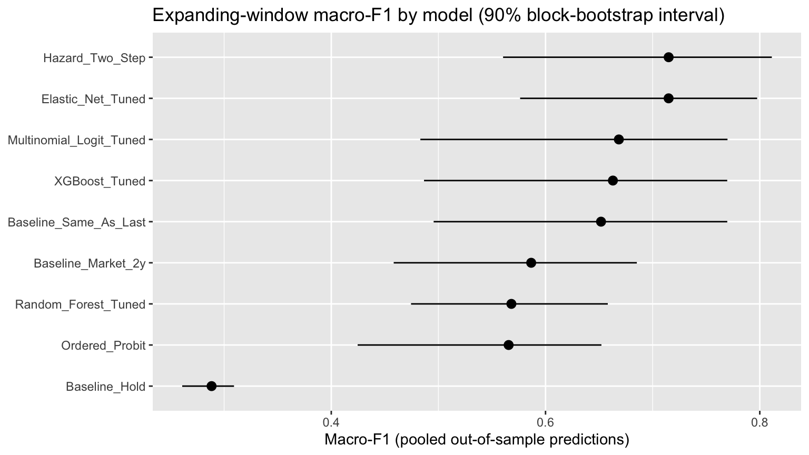
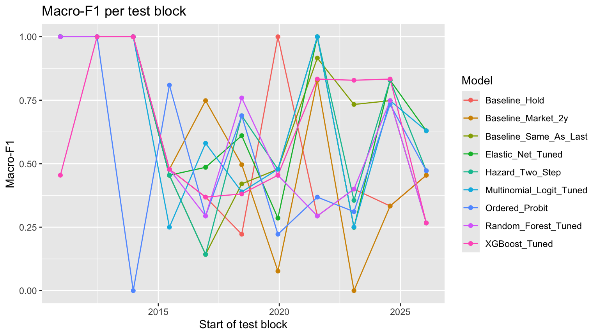

Code
df_rq3 <- df_final %>%
arrange(date)
df_rq3$policy_change <- as.integer(df_rq3$policy_change)This section turns the meeting-level data into a multiclass classification problem and compares tuned machine-learning models against three simple baselines.
Written by Inuk Baik for the course project and extended for this portfolio: correct meeting labels, a fair evaluation, new features, two dynamic models and a window check. What changed lists each change with its effect.
The data are restructured at the FOMC meeting level so the prediction task matches actual decision points.
Each row is one scheduled FOMC meeting, labelled by what was decided at that meeting.
Label rule. The label compares the target the day before the meeting starts with the target 2 days after the decision. Rate changes often take effect the day after the announcement, so the window has to extend past the decision date. Since 1986, 124 of 150 target changes fall inside such a window. The other 26 were intermeeting moves made by the Chair between meetings (all in 1986–1992). They are not decisions of any meeting, so they are not attributed to one.
Why scheduled meetings only. Conference calls and unscheduled meetings are excluded:
Emergency moves are not discarded from the data. They remain in the target series and could be used as a predictor later (“was there an intermeeting move since the last meeting?”).
The previous version of this section labelled meetings from the change in the monthly average target between meeting months. A move late in one month raised the next month’s average, so later holds were labelled as hikes or cuts. Two meetings in the same month were also merged into one row.
target_daily <- read.csv("data/fed_target_daily.csv") %>%
mutate(date = as.Date(date)) %>%
arrange(date)
# Target in effect on a given day (last observation on or before it).
target_asof <- function(d) {
target_daily$ff_target[findInterval(as.numeric(d), as.numeric(target_daily$date))]
}
meetings_rq3 <- read.csv("data/fomc_meetings.csv") %>%
filter(type == "scheduled") %>%
mutate(
start_date = as.Date(start_date),
decision_date = as.Date(decision_date),
month = as.Date(format(start_date, "%Y-%m-01"))
) %>%
filter(month >= SAMPLE_START, month <= SAMPLE_END) %>%
mutate(
target_before = target_asof(start_date - 1),
target_after = target_asof(decision_date + LABEL_WINDOW_DAYS),
target_change = target_after - target_before,
policy_action_class = factor(
case_when(
target_change > 0 ~ "hike",
target_change < 0 ~ "cut",
TRUE ~ "hold"
),
levels = c("cut", "hold", "hike")
)
)
meetings_rq3 %>%
count(policy_action_class) %>%
mutate(percent = round(100 * n / sum(n), 2)) policy_action_class n percent
1 cut 42 12.88
2 hold 225 69.02
3 hike 59 18.10A predictor for a meeting must have been published before the meeting started. Market data (yields, spreads, financial conditions, oil) for a month is known when the month ends, so a meeting gets the previous month’s average. Government statistics come out later: the unemployment rate for March is published in early April, industrial production mid-April, and PCE inflation only at the end of April. A meeting on April 1 has February’s PCE, not March’s.
Each predictor is therefore taken from the latest month published before the meeting’s first day, using the release delays in the settings. Derived variables follow their source: inflation_gap and core_pce_yoy follow core PCE, payems_yoy follows payrolls, and so on.
Series that trend over decades (price indexes, industrial production, housing starts, oil prices) enter as year-over-year percentage changes rather than levels. A level mostly tells a model which era a meeting is in, and in later test folds it lies outside anything seen in training, which tree models in particular cannot extrapolate.
The monthly FOMC counts and “days since the last meeting” (measured from the first of the month) are replaced by two meeting-level features: days since the previous scheduled decision, and the number of emergency calls or unscheduled meetings held since then.
Persistence. The Fed moves in runs, and “same as last meeting” is the strongest baseline. So the models also see the previous scheduled decision, the direction of the most recent target change, and the days since that change. All three are public before the meeting.
Where rates are. The target level the day before the meeting, and a flag for the zero lower bound (target at or below 0.25%). Without it, no model knows that a cut is impossible when rates are already at zero.
Market expectations. The 2-year Treasury yield on the day before the meeting minus the current target, the same signal the market baseline uses. When markets expect hikes, the 2-year yield sits above the target.
Tried and dropped: momentum. Three-month changes in unemployment and core inflation and the Sahm rule indicator were also tested. They lowered the expanding-window score of three of the four models, so they were left out. Because that choice was made after seeing the evaluation results, the final scores below are slightly optimistic.
# Price indexes, production, housing starts and oil prices trend over
# decades, so their levels mostly say what era it is (and later test folds
# sit outside the training range). They enter as year-over-year % changes.
trending_levels <- c("PCEPILFE", "PCEPI", "INDPRO", "HOUST", "WTISPLC")
yoy <- function(x) 100 * (x / lag(x, 12) - 1)
rq3_predictors <- c(
setdiff(
names(df_rq3),
c("date", "ff_target",
"unrate_lag1", # duplicate of UNRATE one month back
"term_spread_10y_3m", # duplicate of T10Y3M
trending_levels,
# monthly calendar counts, replaced by meeting-based timing below
"fomc_meetings", "fomc_scheduled", "fomc_unscheduled", "days_since_last_fomc")
),
"indpro_yoy", "houst_yoy", "oil_yoy"
)
derived_from <- c(
core_pce_yoy = "PCEPILFE", inflation_gap = "PCEPILFE", payems_yoy = "PAYEMS",
indpro_yoy = "INDPRO", houst_yoy = "HOUST", oil_yoy = "WTISPLC"
)
release_delay <- function(col) {
src <- if (col %in% names(derived_from)) derived_from[[col]] else col
if (src %in% names(RELEASE_DELAY_DAYS)) RELEASE_DELAY_DAYS[[src]] else 0
}
# Month m is published once (last day of m) + delay < meeting start, so
# the latest published month is the month before (start - delay).
latest_published_month <- function(start_date, delay) {
as.Date(zoo::as.yearmon(start_date - delay) - 1 / 12)
}
# Look values up in the full cleaned panel (from 1982), not the 1986+
# sample: early-1986 meetings need data from late 1985.
predictor_panel <- df_clean %>%
arrange(date) %>%
mutate(
policy_change = as.integer(policy_change),
indpro_yoy = yoy(INDPRO),
houst_yoy = yoy(HOUST),
oil_yoy = yoy(WTISPLC)
)
df_meeting_model <- meetings_rq3 %>%
select(start_date, decision_date, policy_action_class)
for (col in rq3_predictors) {
data_month <- latest_published_month(df_meeting_model$start_date, release_delay(col))
df_meeting_model[[col]] <- predictor_panel[[col]][match(data_month, predictor_panel$date)]
}
release_table <- tibble(
Predictor = rq3_predictors,
Delay_Days = map_dbl(rq3_predictors, release_delay)
) %>%
filter(Delay_Days > 0) %>%
mutate(Share_Two_Months_Back = map_dbl(Delay_Days, function(d) {
mean(latest_published_month(df_meeting_model$start_date, d) <
latest_published_month(df_meeting_model$start_date, 0))
}))
release_table# A tibble: 7 × 3
Predictor Delay_Days Share_Two_Months_Back
<chr> <dbl> <dbl>
1 UNRATE 10 0.218
2 PAYEMS 10 0.218
3 core_pce_yoy 31 1
4 payems_yoy 10 0.218
5 inflation_gap 31 1
6 indpro_yoy 18 0.525
7 houst_yoy 20 0.610# Meeting-based timing, from the full FOMC calendar: days since the
# previous scheduled decision, and emergency calls or unscheduled meetings
# held since then (a sign of stress the monthly data cannot show).
all_scheduled <- fomc_meetings %>%
filter(type == "scheduled") %>%
transmute(start = as.Date(start_date), decision = as.Date(decision_date)) %>%
arrange(start)
emergency_starts <- fomc_meetings %>%
filter(type %in% c("conference_call", "unscheduled_meeting")) %>%
pull(date)
prev_decision_date <- all_scheduled$decision[
match(df_meeting_model$start_date, all_scheduled$start) - 1
]
df_meeting_model <- df_meeting_model %>%
mutate(
days_since_prev_meeting = as.numeric(start_date - prev_decision_date),
calls_since_prev_meeting = map2_int(prev_decision_date, start_date, function(a, b) {
sum(emergency_starts > a & emergency_starts < b)
})
)
rq3_predictors <- c(rq3_predictors, "days_since_prev_meeting", "calls_since_prev_meeting")
# Persistence: what the Fed did last. The previous scheduled decision
# (cut -1, hold 0, hike +1), and from the daily target the direction of the
# most recent change and the days since it (this also catches moves made
# between meetings).
target_changes <- target_daily %>%
mutate(change = ff_target - lag(ff_target)) %>%
filter(!is.na(change), change != 0)
df_meeting_model <- df_meeting_model %>%
arrange(start_date) %>%
mutate(
prev_move = lag(as.integer(policy_action_class) - 2L, default = 0L),
last_change_idx = findInterval(as.numeric(start_date - 1), as.numeric(target_changes$date)),
last_change_dir = sign(target_changes$change[last_change_idx]),
days_since_change = as.numeric(start_date - target_changes$date[last_change_idx])
) %>%
select(-last_change_idx)
rq3_predictors <- c(rq3_predictors, "prev_move", "last_change_dir", "days_since_change")
# Where rates are: the target the day before the meeting, and whether it
# is at the zero lower bound (where a cut is impossible).
df_meeting_model <- df_meeting_model %>%
mutate(
target_level = target_asof(start_date - 1),
at_zlb = as.integer(target_level <= ZLB_MAX_TARGET)
)
rq3_predictors <- c(rq3_predictors, "target_level", "at_zlb")
# Market expectations: 2-year Treasury yield on the last trading day before
# the meeting minus the current target. Above zero, markets expect hikes.
market_daily <- read.csv("data/market_daily.csv") %>%
mutate(date = as.Date(date)) %>%
filter(!is.na(DGS2)) %>%
arrange(date)
dgs2_asof <- function(d) {
market_daily$DGS2[findInterval(as.numeric(d), as.numeric(market_daily$date))]
}
df_meeting_model <- df_meeting_model %>%
mutate(market_2y_spread = dgs2_asof(start_date - 1) - target_level)
rq3_predictors <- c(rq3_predictors, "market_2y_spread")
# `date` becomes the decision date.
df_meeting_model <- df_meeting_model %>%
rename(date = decision_date) %>%
select(-start_date) %>%
arrange(date)Share_Two_Months_Back is the share of meetings whose latest published value for that series was from two months earlier. The previous version gave every meeting the previous month’s value of every series, which used PCE inflation before it was published at almost every meeting.
The release delays above control when each number became public, but not which version of it was public. All predictors come from FRED as it stands today. The agencies that publish these statistics (the Bureau of Labor Statistics, the Bureau of Economic Analysis, the Federal Reserve) revise many of them after the first release, sometimes years later: payrolls, PCE inflation, industrial production and housing starts all change this way. So the values used here can differ from the numbers the Fed saw at each meeting, and the release delays are cautious approximations rather than actual release dates. FRED’s archive (ALFRED) keeps the originally published versions for most of these series (core PCE only from 2000, financial conditions only from 2011), so a real-time version of this evaluation is possible but was not built. The inputs that matter most here (the previous decision, the target level and market yields) are not revised, so the effect on the comparison is likely small.
'data.frame': 326 obs. of 22 variables:
$ date : Date, format: "1986-02-12" "1986-04-01" ...
$ policy_action_class : Factor w/ 3 levels "cut","hold","hike": 2 3 3 1 1 2 2 2 2 2 ...
$ policy_change : int 0 1 1 1 1 1 0 0 1 0 ...
$ MICH : num 2.9 2.3 2.4 2.9 2.8 3 3.2 2.8 2.9 3.1 ...
$ UNRATE : num 6.7 7.2 7.1 7.2 7 6.9 7 6.9 6.6 6.6 ...
$ DGS2 : num 8.14 7.21 6.7 7.18 6.67 ...
$ T10Y3M : num 1.89 1.01 1.06 1.4 1.3 ...
$ BAA10Y : num 2.24 2.72 2.89 2.54 2.86 ...
$ ANFCI : num 0.0996 -0.0752 -0.0813 0.1665 0.2198 ...
$ payems_yoy : num 2.45 2.43 2.15 1.99 1.87 ...
$ inflation_gap : num 1.96 1.67 1.62 1.51 1.47 ...
$ indpro_yoy : num 1.463 1.048 0.54 0.542 1.319 ...
$ houst_yoy : num 20.47 13.24 4.22 10.36 10.2 ...
$ oil_yoy : num -10.5 -55.3 -55.4 -50.4 -57.6 ...
$ days_since_prev_meeting : num 56 48 49 49 41 35 43 40 56 48 ...
$ calls_since_prev_meeting: int 0 0 1 0 0 0 0 0 0 1 ...
$ prev_move : int 0 0 1 1 -1 -1 0 0 0 0 ...
$ last_change_dir : num -1 -1 -1 1 -1 -1 -1 -1 1 1 ...
$ days_since_change : num 55 25 29 33 39 33 76 116 36 85 ...
$ target_level : num 7.75 7.25 6.75 6.88 6.38 ...
$ at_zlb : int 0 0 0 0 0 0 0 0 0 0 ...
$ market_2y_spread : num 0.33 -0.33 0.53 -0.175 -0.005 ...
cut hold hike
42 225 59 This step keeps predictors observed at every meeting since 1986 and removes a few highly redundant variables.
df_final_rq3$policy_action_class <- factor(
df_final_rq3$policy_action_class,
levels = c("cut", "hold", "hike")
)
n <- nrow(df_final_rq3)
train_size <- floor(0.8 * n)
train_data <- df_final_rq3[1:train_size, ]
test_data <- df_final_rq3[(train_size + 1):n, ]
train_data$policy_action_class <- factor(
train_data$policy_action_class,
levels = c("cut", "hold", "hike")
)
test_data$policy_action_class <- factor(
test_data$policy_action_class,
levels = c("cut", "hold", "hike")
)
prop.table(table(train_data$policy_action_class))
cut hold hike
0.1269231 0.7038462 0.1692308
cut hold hike
0.1363636 0.6363636 0.2272727 A chronological split is used so the evaluation respects time order.
Models are compared on macro-F1: the F1 score for each class (cut, hold, hike), averaged with equal weight. A model that never predicts a class gets F1 = 0 for that class. An earlier version dropped such classes from the average, which scored “always hold” on the hold class alone and ranked it first; it never catches a move, so it should not. The same rule picks the tuning settings on the inner validation block. Under the old rule, tuning also favoured settings that predict only holds. A class’s F1 is left out only when it appears neither in the predictions nor in the actual outcomes.
Ties are broken by balanced accuracy (the average of the three class recalls). Kappa and accuracy are reported too. Accuracy alone rewards predicting hold, since about 70% of meetings are holds.
RQ3_CLASSES <- c("cut", "hold", "hike")
class_scores <- function(pred, truth) {
tab <- table(
Predicted = factor(pred, levels = RQ3_CLASSES),
Actual = factor(truth, levels = RQ3_CLASSES)
)
tp <- diag(tab)
fp <- rowSums(tab) - tp
fn <- colSums(tab) - tp
tibble(
Class = RQ3_CLASSES,
Actual = as.integer(colSums(tab)),
Predicted = as.integer(rowSums(tab)),
Precision = ifelse(tp + fp == 0, 0, tp / (tp + fp)),
Recall = ifelse(tp + fn == 0, NA, tp / (tp + fn)),
F1 = ifelse(2 * tp + fp + fn == 0, NA, 2 * tp / (2 * tp + fp + fn))
)
}
macro_f1 <- function(pred, truth) mean(class_scores(pred, truth)$F1, na.rm = TRUE)
cohen_kappa <- function(pred, truth) {
tab <- table(factor(pred, levels = RQ3_CLASSES), factor(truth, levels = RQ3_CLASSES))
n <- sum(tab)
po <- sum(diag(tab)) / n
pe <- sum(rowSums(tab) * colSums(tab)) / n^2
if (pe == 1) return(0)
(po - pe) / (1 - pe)
}
score_predictions <- function(pred, truth) {
cs <- class_scores(pred, truth)
tibble(
Macro_F1 = mean(cs$F1, na.rm = TRUE),
Balanced_Accuracy = mean(cs$Recall, na.rm = TRUE),
Kappa = cohen_kappa(pred, truth),
Accuracy = mean(as.character(pred) == as.character(truth)),
n = length(truth)
)
}
rank_scores <- function(scores) {
scores %>% arrange(desc(Macro_F1), desc(Balanced_Accuracy), desc(Kappa), desc(Accuracy))
}make_inner_split <- function(train_part, valid_frac = 0.2) {
n <- nrow(train_part)
valid_size <- max(10, floor(valid_frac * n))
inner_train <- train_part[1:(n - valid_size), ]
inner_valid <- train_part[(n - valid_size + 1):n, ]
list(
inner_train = inner_train,
inner_valid = inner_valid
)
}
to_xgb_label <- function(y_factor) {
as.integer(y_factor) - 1
}
# Inverse-frequency class weights from the training rows only: each class
# gets the same total weight, so a rare cut counts as much as several holds.
# `weighted = FALSE` gives every row weight 1.
class_freq_weights <- function(y, weighted) {
counts <- table(factor(y, levels = levels(y)))
if (!weighted) return(setNames(rep(1, length(counts)), names(counts)))
length(y) / (length(counts) * pmax(counts, 1))
}
class_weights <- function(y, weighted) {
as.numeric(class_freq_weights(y, weighted)[as.character(y)])
}The inner split is also chronological so tuning remains time-aware.
Class imbalance. About 70% of meetings are holds, so a model can learn to ignore cuts and hikes. Inverse-frequency class weights (computed from the training rows only) counter this, but they can also overshoot: when moves are rarer in the test period than in training, weighted models raise too many false alarms. Applied to every model, weights lowered pooled macro-F1 for all four. So weighting is treated as a tuning setting: each model tries both unweighted and weighted fits, and its own time-ordered validation block decides. Weights enter as case weights for the multinomial logit, elastic net and XGBoost, and as classwt for the random forest.
# Standardize numeric inputs with training-window means and SDs only, so
# multinom's weight decay penalizes every input on the same scale.
make_scaler <- function(df) {
cols <- names(df)[vapply(df, is.numeric, logical(1))]
list(cols = cols,
center = vapply(df[cols], mean, numeric(1)),
scale = vapply(df[cols], function(x) { s <- sd(x); if (s > 0) s else 1 }, numeric(1)))
}
apply_scaler <- function(df, sc) {
for (col in sc$cols) df[[col]] <- (df[[col]] - sc$center[[col]]) / sc$scale[[col]]
df
}
tune_multinom <- function(train_part) {
split_obj <- make_inner_split(train_part)
inner_scaler <- make_scaler(split_obj$inner_train)
inner_train <- apply_scaler(split_obj$inner_train, inner_scaler)
inner_valid <- apply_scaler(split_obj$inner_valid, inner_scaler)
decay_grid <- c(0, 1e-4, 1e-3, 1e-2, 1e-1)
results <- list()
for (w in RQ3_WEIGHT_OPTIONS) for (d in decay_grid) {
fit <- multinom(
policy_action_class ~ . - date,
data = inner_train,
weights = class_weights(inner_train$policy_action_class, w),
decay = d,
trace = FALSE,
MaxNWts = 5000
)
pred <- predict(fit, newdata = inner_valid)
metric_row <- score_predictions(pred, inner_valid$policy_action_class)
results[[length(results) + 1]] <- cbind(
data.frame(weighted = w, decay = d),
metric_row
)
}
results_df <- bind_rows(results) %>%
rank_scores()
best_decay <- results_df$decay[1]
best_weighted <- results_df$weighted[1]
scaler <- make_scaler(train_part)
final_fit <- multinom(
policy_action_class ~ . - date,
data = apply_scaler(train_part, scaler),
weights = class_weights(train_part$policy_action_class, best_weighted),
decay = best_decay,
trace = FALSE,
MaxNWts = 5000
)
list(
best_params = results_df[1, ],
tuning_results = results_df,
final_fit = final_fit,
scaler = scaler
)
}tune_enet <- function(train_part) {
split_obj <- make_inner_split(train_part)
x_inner_train <- rq3_x(split_obj$inner_train)
y_inner_train <- split_obj$inner_train$policy_action_class
x_inner_valid <- rq3_x(split_obj$inner_valid)
y_inner_valid <- split_obj$inner_valid$policy_action_class
# alpha and lambda are chosen together on the time-ordered validation
# block, like every other model's settings. (cv.glmnet would pick lambda
# with random folds, training on later meetings to score earlier ones.)
alpha_grid <- c(0, 0.25, 0.5, 0.75, 1)
grid <- expand.grid(weighted = RQ3_WEIGHT_OPTIONS, alpha = alpha_grid)
results_df <- map2_dfr(grid$weighted, grid$alpha, function(w, a) {
fit <- glmnet(
x = x_inner_train,
y = y_inner_train,
weights = class_weights(y_inner_train, w),
family = "multinomial",
alpha = a,
standardize = TRUE,
nlambda = 50,
lambda.min.ratio = 1e-3,
maxit = 200000
)
pred <- predict(fit, newx = x_inner_valid, type = "class")
map_dfr(seq_along(fit$lambda), function(j) {
bind_cols(
tibble(weighted = w, alpha = a, lambda = fit$lambda[j]),
score_predictions(as_class(pred[, j]), y_inner_valid)
)
})
}) %>%
# ties go to the larger lambda (the simpler model)
arrange(desc(Macro_F1), desc(Balanced_Accuracy), desc(Kappa), desc(Accuracy), desc(lambda))
best <- results_df[1, ]
final_fit <- glmnet(
x = rq3_x(train_part),
y = train_part$policy_action_class,
weights = class_weights(train_part$policy_action_class, best$weighted),
family = "multinomial",
alpha = best$alpha,
standardize = TRUE,
nlambda = 50,
lambda.min.ratio = 1e-3,
maxit = 200000
)
list(
best_params = best,
tuning_results = results_df,
final_fit = final_fit
)
}tune_rf <- function(train_part) {
split_obj <- make_inner_split(train_part)
inner_train <- split_obj$inner_train
inner_valid <- split_obj$inner_valid
p <- ncol(inner_train %>% select(-date, -policy_action_class))
mtry_grid <- unique(pmax(1, c(floor(sqrt(p)), floor(p / 3), floor(p / 2))))
nodesize_grid <- c(1, 3, 5)
ntree_grid <- c(300, 500, 1000)
results <- list()
for (w in RQ3_WEIGHT_OPTIONS) for (m in mtry_grid) {
for (ns in nodesize_grid) {
for (nt in ntree_grid) {
fit <- randomForest(
policy_action_class ~ . - date,
data = inner_train,
classwt = class_freq_weights(inner_train$policy_action_class, w),
ntree = nt,
mtry = m,
nodesize = ns,
importance = TRUE
)
pred <- predict(fit, newdata = inner_valid)
metric_row <- score_predictions(pred, inner_valid$policy_action_class)
results[[length(results) + 1]] <- cbind(
data.frame(weighted = w, mtry = m, nodesize = ns, ntree = nt),
metric_row
)
}
}
}
results_df <- bind_rows(results) %>%
rank_scores()
best_mtry <- results_df$mtry[1]
best_nodesize <- results_df$nodesize[1]
best_ntree <- results_df$ntree[1]
final_fit <- randomForest(
policy_action_class ~ . - date,
data = train_part,
classwt = class_freq_weights(train_part$policy_action_class, results_df$weighted[1]),
ntree = best_ntree,
mtry = best_mtry,
nodesize = best_nodesize,
importance = TRUE
)
list(
best_params = results_df[1, ],
tuning_results = results_df,
final_fit = final_fit
)
}tune_xgb <- function(train_part) {
split_obj <- make_inner_split(train_part)
inner_train <- split_obj$inner_train
inner_valid <- split_obj$inner_valid
x_inner_train <- model.matrix(policy_action_class ~ . - date, data = inner_train)[, -1]
y_inner_train <- to_xgb_label(inner_train$policy_action_class)
x_inner_valid <- model.matrix(policy_action_class ~ . - date, data = inner_valid)[, -1]
y_inner_valid_factor <- inner_valid$policy_action_class
dvalid <- xgb.DMatrix(data = x_inner_valid)
eta_grid <- c(0.01, 0.05, 0.1)
max_depth_grid <- c(1, 2, 3)
nrounds_grid <- c(100, 300, 500)
min_child_weight_grid <- c(1, 3)
results <- list()
# Boosting is sequential and deterministic here (no subsampling), so the
# first k trees of a 500-round fit are exactly a k-round fit. Train the
# largest nrounds once per setting and score each smaller nrounds from it.
for (w in RQ3_WEIGHT_OPTIONS) for (eta_val in eta_grid) {
dtrain <- xgb.DMatrix(
data = x_inner_train, label = y_inner_train,
weight = class_weights(inner_train$policy_action_class, w)
)
for (depth_val in max_depth_grid) {
for (mcw_val in min_child_weight_grid) {
fit <- xgb.train(
params = list(
objective = "multi:softmax",
num_class = 3,
eval_metric = "merror",
eta = eta_val,
max_depth = depth_val,
min_child_weight = mcw_val,
subsample = 1,
colsample_bytree = 1,
nthread = 1
),
data = dtrain,
nrounds = max(nrounds_grid),
verbose = 0
)
for (nrounds_val in nrounds_grid) {
# xgboost 3.x: iterationrange is 1-based and inclusive
pred_numeric <- predict(fit, newdata = dvalid, iterationrange = c(1, nrounds_val))
pred_factor <- factor(
c("cut", "hold", "hike")[pred_numeric + 1],
levels = c("cut", "hold", "hike")
)
metric_row <- score_predictions(pred_factor, y_inner_valid_factor)
results[[length(results) + 1]] <- cbind(
data.frame(
weighted = w,
eta = eta_val,
max_depth = depth_val,
nrounds = nrounds_val,
min_child_weight = mcw_val
),
metric_row
)
}
}
}
}
# Restore the original grid order (weighted, eta, depth, nrounds, mcw) so
# ties are broken exactly as before.
results <- bind_rows(results) %>%
arrange(
match(weighted, RQ3_WEIGHT_OPTIONS), match(eta, eta_grid),
match(max_depth, max_depth_grid), match(nrounds, nrounds_grid),
match(min_child_weight, min_child_weight_grid)
)
results_df <- results %>%
rank_scores()
best <- results_df[1, ]
x_train <- model.matrix(policy_action_class ~ . - date, data = train_part)[, -1]
y_train <- to_xgb_label(train_part$policy_action_class)
dtrain_full <- xgb.DMatrix(
data = x_train, label = y_train,
weight = class_weights(train_part$policy_action_class, best$weighted)
)
final_fit <- xgb.train(
params = list(
objective = "multi:softmax",
num_class = 3,
eval_metric = "merror",
eta = best$eta,
max_depth = best$max_depth,
min_child_weight = best$min_child_weight,
subsample = 1,
colsample_bytree = 1,
nthread = 1
),
data = dtrain_full,
nrounds = best$nrounds,
verbose = 0
)
list(
best_params = best,
tuning_results = results_df,
final_fit = final_fit
)
}These tuning functions keep the model-fitting section organized while preserving the full comparison pipeline.
The models above treat cut, hold and hike as three unrelated labels. An ordered probit uses their order. It builds one “policy pressure” score from a few inputs and two cut-off points: below the first the Fed cuts, above the second it hikes, in between it holds. With the previous decision as an input, it is the standard dynamic model of discrete policy moves.
Its inputs are fixed in advance, in the style of a Taylor rule, rather than chosen from results: prev_move, inflation_gap, UNRATE, market_2y_spread, at_zlb. A small fixed set keeps the model stable on a few hundred meetings. There are no hyperparameters; like the other models, it chooses on its validation block whether to use class weights.
# Inputs that are constant in a training window (e.g. the zero-bound flag
# before 2008) are left out of that window's fit.
varying_vars <- function(df, vars) {
vars[vapply(df[vars], function(x) isTRUE(sd(x) > 0), logical(1))]
}
fit_oprobit <- function(df, weighted) {
d <- df[, c("policy_action_class", RQ3_TAYLOR_VARS)]
d$policy_action_class <- factor(d$policy_action_class, levels = RQ3_CLASSES, ordered = TRUE)
w <- class_weights(df$policy_action_class, weighted)
vars <- varying_vars(d, RQ3_TAYLOR_VARS)
f <- reformulate(vars, response = "policy_action_class")
shares <- prop.table(table(d$policy_action_class))
fit_with <- function(...) MASS::polr(f, data = d, weights = w, method = "probit", Hess = TRUE, ...)
# polr's own starting values fail in some short windows (e.g. a window
# of mostly zero-bound holds). Retry from zero slopes and the observed
# class shares; if a class is missing altogether, fall back to predicting
# the window's most common outcome.
tryCatch(fit_with(), error = function(e) tryCatch(
fit_with(start = c(rep(0, length(vars)), qnorm(cumsum(shares)[1:2]))),
error = function(e2) structure(list(mode = names(which.max(shares))), class = "class_mode")
))
}
predict_oprobit <- function(fit, newdata) {
if (inherits(fit, "class_mode")) return(as_class(rep(fit$mode, nrow(newdata))))
as_class(as.character(predict(fit, newdata = newdata, type = "class")))
}
tune_oprobit <- function(train_part) {
split_obj <- make_inner_split(train_part)
results_df <- map_dfr(RQ3_WEIGHT_OPTIONS, function(w) {
fit <- fit_oprobit(split_obj$inner_train, w)
bind_cols(
tibble(weighted = w),
score_predictions(predict_oprobit(fit, split_obj$inner_valid),
split_obj$inner_valid$policy_action_class)
)
}) %>%
rank_scores()
list(
best_params = results_df[1, ],
tuning_results = results_df,
final_fit = fit_oprobit(train_part, results_df$weighted[1])
)
}Fed moves come in runs separated by long pauses, so how long it has been since the last change matters. Hamilton and Jordà (2002) model this with an autoregressive conditional hazard: the chance of a move at each meeting depends on the time since the last one, and an ordered probit then picks the direction. This page uses a simpler two-step version of the same idea, built from two logistic regressions:
The two combine into probabilities: P(hold) = 1 − P(move), P(hike) = P(move) × P(hike | move), P(cut) = P(move) × P(cut | move); the most likely outcome is the prediction. Like the ordered probit it uses fixed inputs and chooses class weights on its validation block.
HAZARD_MOVE_VARS <- c("log_days_since_change", "abs_prev_move", "abs_market_spread",
"at_zlb", "inflation_gap", "UNRATE")
HAZARD_DIR_VARS <- c("prev_move", "inflation_gap", "UNRATE", "market_2y_spread")
hazard_frame <- function(df) {
df %>%
mutate(
moved = as.integer(policy_action_class != "hold"),
hiked = as.integer(policy_action_class == "hike"),
log_days_since_change = log(days_since_change),
abs_prev_move = abs(prev_move),
abs_market_spread = abs(market_2y_spread)
)
}
# A logit, or just the observed share when a window has no variation to
# fit (e.g. no moves, or moves in one direction only).
fit_logit_or_share <- function(d, y, vars, weighted) {
if (nrow(d) == 0) return(structure(list(p = 0), class = "share_fit"))
if (length(unique(d[[y]])) < 2) return(structure(list(p = mean(d[[y]])), class = "share_fit"))
w <- class_weights(factor(d[[y]]), weighted)
glm(reformulate(varying_vars(d, vars), response = y), data = d, weights = w, family = binomial)
}
predict_logit_or_share <- function(fit, d) {
if (inherits(fit, "share_fit")) return(rep(fit$p, nrow(d)))
predict(fit, newdata = d, type = "response")
}
fit_hazard <- function(df, weighted) {
d <- hazard_frame(df)
list(
move = fit_logit_or_share(d, "moved", HAZARD_MOVE_VARS, weighted),
dir = fit_logit_or_share(d[d$moved == 1, ], "hiked", HAZARD_DIR_VARS, weighted)
)
}
predict_hazard <- function(fit, newdata) {
d <- hazard_frame(newdata)
p_move <- predict_logit_or_share(fit$move, d)
p_hike <- predict_logit_or_share(fit$dir, d)
probs <- cbind(cut = p_move * (1 - p_hike), hold = 1 - p_move, hike = p_move * p_hike)
as_class(RQ3_CLASSES[max.col(probs, ties.method = "first")])
}
tune_hazard <- function(train_part) {
split_obj <- make_inner_split(train_part)
results_df <- map_dfr(RQ3_WEIGHT_OPTIONS, function(w) {
fit <- fit_hazard(split_obj$inner_train, w)
bind_cols(
tibble(weighted = w),
score_predictions(predict_hazard(fit, split_obj$inner_valid),
split_obj$inner_valid$policy_action_class)
)
}) %>%
rank_scores()
list(
best_params = results_df[1, ],
tuning_results = results_df,
final_fit = fit_hazard(train_part, results_df$weighted[1])
)
}Every model, including the baseline, is a pair of functions: tune() fits it on a training window (with time-ordered inner validation) and predict() returns cut / hold / hike for new meetings. The held-out split and the expanding-window evaluation both run through fit_and_predict(), so every model is evaluated by identical code.
Three baselines set the reference line. A model family is only useful if it beats them:
# Decision at the previous scheduled meeting (public at every meeting).
prev_decision <- meetings_rq3 %>%
arrange(start_date) %>%
transmute(date = decision_date, prev = lag(as.character(policy_action_class), default = "hold"))
# 2-year yield on the last trading day before the meeting minus the target
# (computed with the predictors above as `market_2y_spread`).
market_signal <- df_meeting_model %>%
transmute(date, signal = market_2y_spread)
summary(market_signal$signal) Min. 1st Qu. Median Mean 3rd Qu. Max.
-1.81500 0.00125 0.36500 0.36397 0.77500 2.52500 as_class <- function(x) factor(as.vector(x), levels = RQ3_CLASSES)
rq3_x <- function(data) model.matrix(policy_action_class ~ . - date, data = data)[, -1]
rq3_models <- list(
Baseline_Hold = list(
tune = function(train_part) list(best_params = NULL),
predict = function(obj, newdata) as_class(rep("hold", nrow(newdata)))
),
Baseline_Same_As_Last = list(
tune = function(train_part) list(best_params = NULL),
predict = function(obj, newdata) {
as_class(prev_decision$prev[match(newdata$date, prev_decision$date)])
}
),
Baseline_Market_2y = list(
tune = function(train_part) {
signal_frame <- function(df) data.frame(
y = df$policy_action_class,
signal = market_signal$signal[match(df$date, market_signal$date)]
)
split_obj <- make_inner_split(train_part)
inner_train <- signal_frame(split_obj$inner_train)
inner_valid <- signal_frame(split_obj$inner_valid)
# weighted or not, chosen on the validation block like the models
results_df <- map_dfr(RQ3_WEIGHT_OPTIONS, function(w) {
fit <- multinom(y ~ signal, data = inner_train,
weights = class_weights(inner_train$y, w), trace = FALSE)
bind_cols(tibble(weighted = w),
score_predictions(as_class(predict(fit, inner_valid)), inner_valid$y))
}) %>%
rank_scores()
full <- signal_frame(train_part)
list(
best_params = results_df[1, ],
final_fit = multinom(y ~ signal, data = full,
weights = class_weights(full$y, results_df$weighted[1]),
trace = FALSE)
)
},
predict = function(obj, newdata) {
signal <- market_signal$signal[match(newdata$date, market_signal$date)]
as_class(predict(obj$final_fit, newdata = data.frame(signal = signal)))
}
),
Multinomial_Logit_Tuned = list(
tune = tune_multinom,
predict = function(obj, newdata) {
as_class(predict(obj$final_fit, newdata = apply_scaler(newdata, obj$scaler)))
}
),
Elastic_Net_Tuned = list(
tune = tune_enet,
predict = function(obj, newdata) {
as_class(predict(obj$final_fit, newx = rq3_x(newdata), s = obj$best_params$lambda, type = "class"))
}
),
Random_Forest_Tuned = list(
tune = tune_rf,
predict = function(obj, newdata) as_class(predict(obj$final_fit, newdata = newdata))
),
XGBoost_Tuned = list(
tune = tune_xgb,
predict = function(obj, newdata) {
as_class(RQ3_CLASSES[predict(obj$final_fit, newdata = xgb.DMatrix(data = rq3_x(newdata))) + 1])
}
),
Ordered_Probit = list(
tune = tune_oprobit,
predict = function(obj, newdata) predict_oprobit(obj$final_fit, newdata)
),
Hazard_Two_Step = list(
tune = tune_hazard,
predict = function(obj, newdata) predict_hazard(obj$final_fit, newdata)
)
)
# Every model starts from the same seed, so a model's result does not depend
# on which models ran before it (random forest is the random one).
fit_and_predict <- function(train_part, test_part, seed, models = rq3_models) {
map(models, function(m) {
set.seed(seed)
obj <- m$tune(train_part)
list(obj = obj, pred = m$predict(obj, test_part))
})
}# Fingerprint of everything the two cached RQ3 chunks depend on: data,
# settings, tuning/metric functions and package versions. If any of these
# change, knitr re-runs the cached chunks; otherwise it reuses the results.
fn_code <- function(...) lapply(list(...), deparse)
rq3_inputs_hash <- digest::digest(list(
df_final_rq3, train_data, test_data, RQ3_START_TRAIN, RQ3_STEP,
RQ3_SEED, RQ3_WEIGHT_OPTIONS, prev_decision, market_signal,
RQ3_TAYLOR_VARS,
HAZARD_MOVE_VARS, HAZARD_DIR_VARS,
fn_code(fit_logit_or_share, predict_logit_or_share, hazard_frame, fit_hazard, predict_hazard, tune_hazard, varying_vars, fit_oprobit, predict_oprobit, tune_oprobit, make_scaler, apply_scaler, class_weights, class_freq_weights, tune_multinom, tune_enet, tune_rf, tune_xgb, class_scores,
score_predictions, cohen_kappa, rank_scores, make_inner_split,
to_xgb_label, fit_and_predict, as_class, rq3_x),
lapply(rq3_models, function(m) lapply(m, deparse)),
lapply(sessionInfo()$otherPkgs, `[[`, "Version")
))This block tunes each model on the first 80% of meetings and predicts the last 20% once. One split is a single period with few moves, so it is not used to rank the models (the expanding-window evaluation below is). It is kept for the confusion matrices, tuned settings and variable importance.
# A tibble: 9 × 6
Model Macro_F1 Balanced_Accuracy Kappa Accuracy n
<chr> <dbl> <dbl> <dbl> <dbl> <int>
1 Hazard_Two_Step 0.762 0.852 0.628 0.773 66
2 Baseline_Same_As_Last 0.696 0.692 0.503 0.742 66
3 Ordered_Probit 0.639 0.766 0.448 0.636 66
4 Elastic_Net_Tuned 0.611 0.765 0.423 0.606 66
5 XGBoost_Tuned 0.609 0.589 0.414 0.712 66
6 Random_Forest_Tuned 0.524 0.508 0.255 0.667 66
7 Multinomial_Logit_Tuned 0.481 0.553 0.297 0.591 66
8 Baseline_Market_2y 0.405 0.581 0.189 0.364 66
9 Baseline_Hold 0.259 0.333 0 0.636 66$Baseline_Hold
Actual
Predicted cut hold hike
cut 0 0 0
hold 9 42 15
hike 0 0 0
$Baseline_Same_As_Last
Actual
Predicted cut hold hike
cut 6 3 0
hold 3 34 6
hike 0 5 9
$Baseline_Market_2y
Actual
Predicted cut hold hike
cut 9 32 4
hold 0 6 2
hike 0 4 9
$Multinomial_Logit_Tuned
Actual
Predicted cut hold hike
cut 1 0 0
hold 8 23 0
hike 0 19 15
$Elastic_Net_Tuned
Actual
Predicted cut hold hike
cut 9 16 0
hold 0 18 2
hike 0 8 13
$Random_Forest_Tuned
Actual
Predicted cut hold hike
cut 4 3 0
hold 5 37 12
hike 0 2 3
$XGBoost_Tuned
Actual
Predicted cut hold hike
cut 3 4 0
hold 6 35 6
hike 0 3 9
$Ordered_Probit
Actual
Predicted cut hold hike
cut 8 8 0
hold 1 20 1
hike 0 14 14
$Hazard_Two_Step
Actual
Predicted cut hold hike
cut 8 5 0
hold 1 28 0
hike 0 9 15$Baseline_Market_2y
# A tibble: 1 × 6
weighted Macro_F1 Balanced_Accuracy Kappa Accuracy n
<lgl> <dbl> <dbl> <dbl> <dbl> <int>
1 TRUE 0.525 0.768 0.435 0.846 52
$Multinomial_Logit_Tuned
weighted decay Macro_F1 Balanced_Accuracy Kappa Accuracy n
1 FALSE 0 0.6050633 0.7644928 0.2723881 0.7115385 52
$Elastic_Net_Tuned
# A tibble: 1 × 8
weighted alpha lambda Macro_F1 Balanced_Accuracy Kappa Accuracy n
<lgl> <dbl> <dbl> <dbl> <dbl> <dbl> <dbl> <int>
1 TRUE 0.5 0.0578 0.754 0.851 0.516 0.865 52
$Random_Forest_Tuned
weighted mtry nodesize ntree Macro_F1 Balanced_Accuracy Kappa Accuracy
1 FALSE 6 1 300 0.6043956 0.6123188 0.2094595 0.8269231
n
1 52
$XGBoost_Tuned
weighted eta max_depth nrounds min_child_weight Macro_F1 Balanced_Accuracy
1 FALSE 0.1 1 500 3 0.6923077 0.7065217
Kappa Accuracy n
1 0.3851351 0.8653846 52
$Ordered_Probit
# A tibble: 1 × 6
weighted Macro_F1 Balanced_Accuracy Kappa Accuracy n
<lgl> <dbl> <dbl> <dbl> <dbl> <int>
1 TRUE 0.419 0.623 0.0854 0.462 52
$Hazard_Two_Step
# A tibble: 1 × 6
weighted Macro_F1 Balanced_Accuracy Kappa Accuracy n
<lgl> <dbl> <dbl> <dbl> <dbl> <int>
1 TRUE 0.516 0.518 0.0338 0.788 52Fitted on the held-out split’s training meetings. Positive coefficients push toward a hike, negative toward a cut; the two cut-offs (cut|hold, hold|hike) mark where the policy-pressure score switches decision.
Call:
MASS::polr(formula = f, data = d, weights = w, Hess = TRUE, method = "probit")
Coefficients:
Value Std. Error t value
prev_move 1.0213 0.14610 6.990
inflation_gap 0.2260 0.10543 2.144
UNRATE -0.5237 0.09594 -5.459
market_2y_spread 1.4186 0.14897 9.523
at_zlb 1.5531 0.37565 4.134
Intercepts:
Value Std. Error t value
cut|hold -2.9499 0.5092 -5.7927
hold|hike -1.3497 0.4739 -2.8481
Residual Deviance: 349.9947
AIC: 363.9947 Step 1 (move vs. hold) and step 2 (hike vs. cut, given a move), fitted on the held-out split’s training meetings.
Call:
glm(formula = reformulate(varying_vars(d, vars), response = y),
family = binomial, data = d, weights = w)
Coefficients:
Estimate Std. Error z value Pr(>|z|)
(Intercept) 3.4665 1.3738 2.523 0.01163 *
log_days_since_change -0.2914 0.1897 -1.536 0.12450
abs_prev_move 1.0792 0.3694 2.921 0.00348 **
abs_market_spread 0.7922 0.3125 2.535 0.01123 *
at_zlb -0.9059 0.9900 -0.915 0.36017
inflation_gap 0.2013 0.2166 0.929 0.35287
UNRATE -0.5479 0.1831 -2.992 0.00277 **
---
Signif. codes: 0 '***' 0.001 '**' 0.01 '*' 0.05 '.' 0.1 ' ' 1
(Dispersion parameter for binomial family taken to be 1)
Null deviance: 360.44 on 259 degrees of freedom
Residual deviance: 272.05 on 253 degrees of freedom
AIC: 368.26
Number of Fisher Scoring iterations: 6
Call:
glm(formula = reformulate(varying_vars(d, vars), response = y),
family = binomial, data = d, weights = w)
Coefficients:
Estimate Std. Error z value Pr(>|z|)
(Intercept) 9.2681 3.5772 2.591 0.00957 **
prev_move 2.2960 0.7631 3.009 0.00262 **
inflation_gap 0.9476 0.6367 1.488 0.13665
UNRATE -2.0459 0.7196 -2.843 0.00447 **
market_2y_spread 3.4169 0.8759 3.901 9.58e-05 ***
---
Signif. codes: 0 '***' 0.001 '**' 0.01 '*' 0.05 '.' 0.1 ' ' 1
(Dispersion parameter for binomial family taken to be 1)
Null deviance: 106.74 on 76 degrees of freedom
Residual deviance: 32.44 on 72 degrees of freedom
AIC: 43.095
Number of Fisher Scoring iterations: 6rf_fit <- holdout$Random_Forest_Tuned$obj$final_fit
rf_importance <- importance(rf_fit)
rf_importance_df <- data.frame(
Variable = rownames(rf_importance),
MeanDecreaseAccuracy = rf_importance[, "MeanDecreaseAccuracy"],
MeanDecreaseGini = rf_importance[, "MeanDecreaseGini"]
) %>%
arrange(desc(MeanDecreaseAccuracy))
head(rf_importance_df, 10) Variable MeanDecreaseAccuracy MeanDecreaseGini
market_2y_spread market_2y_spread 26.900962 36.589968
last_change_dir last_change_dir 12.583462 13.202468
payems_yoy payems_yoy 11.887276 14.832696
BAA10Y BAA10Y 11.354184 10.716725
UNRATE UNRATE 11.185635 8.518969
days_since_change days_since_change 8.674520 13.088322
DGS2 DGS2 8.379197 8.901399
T10Y3M T10Y3M 7.773630 7.484551
oil_yoy oil_yoy 7.075511 8.604276
prev_move prev_move 6.992118 6.362699 Feature Gain Cover Frequency
<char> <num> <num> <num>
1: market_2y_spread 0.31033561 0.16092068 0.18133333
2: days_since_change 0.12773854 0.05443833 0.04600000
3: payems_yoy 0.11213705 0.10168328 0.12000000
4: last_change_dir 0.07608228 0.01409557 0.01200000
5: inflation_gap 0.06475134 0.15639052 0.14133333
6: oil_yoy 0.06035359 0.09044401 0.07933333
7: DGS2 0.04752304 0.08398005 0.06266667
8: BAA10Y 0.04210589 0.02572904 0.02733333
9: T10Y3M 0.04083873 0.06566825 0.07466667
10: houst_yoy 0.03525167 0.06617538 0.06533333Variable importance helps interpret which pre-meeting macro variables are most useful for predicting meeting outcomes.
The models are ranked here. The first training window holds the first 200 meetings. Each fold tunes every model on all meetings so far and predicts the next 12; then the window grows and the next block is predicted. Every meeting after the first window is predicted exactly once, by models that saw only earlier meetings.
n_meetings <- nrow(df_final_rq3)
fold_ends <- seq(RQ3_START_TRAIN, n_meetings - 1, by = RQ3_STEP)
# Each fold: tune every model on meetings 1..end_train, predict the next
# RQ3_STEP meetings (fewer in the last fold). Keep every out-of-sample
# prediction so all scores are computed afterwards from one table.
# Folds run in parallel (forked workers). Each fold seeds every model
# itself, so results do not depend on how folds are spread over cores.
rolling <- parallel::mclapply(seq_along(fold_ends), function(fold) {
end_train <- fold_ends[fold]
train_part <- df_final_rq3[1:end_train, ]
test_part <- df_final_rq3[(end_train + 1):min(end_train + RQ3_STEP, n_meetings), ]
fits <- fit_and_predict(train_part, test_part, seed = RQ3_SEED + fold)
list(
info = data.frame(
Fold = fold,
Train_End = max(train_part$date),
Test_Start = min(test_part$date),
Test_End = max(test_part$date)
),
preds = imap_dfr(fits, ~ tibble(
Fold = fold,
Model = .y,
date = test_part$date,
truth = test_part$policy_action_class,
pred = .x$pred
)),
tuning = imap(keep(fits, ~ !is.null(.x$obj$best_params)),
~ cbind(Fold = fold, Model = .y, .x$obj$best_params))
)
}, mc.cores = RQ3_CORES, mc.preschedule = FALSE)
failed <- map_lgl(rolling, ~ inherits(.x, "try-error"))
if (any(failed)) stop("Fold(s) failed: ", paste(which(failed), collapse = ", "), "\n", rolling[[which(failed)[1]]])
fold_info <- map_dfr(rolling, "info")
rolling_preds <- map_dfr(rolling, "preds")
tuning_table <- bind_rows(flatten(map(rolling, "tuning")))Each test block holds only 12 meetings, and many blocks contain no cut or no hike, so a score computed per block is noisy and often undefined. Instead, the out-of-sample predictions from all 11 folds (126 meetings, Dec 2010 to Sep 2026) are pooled and each model is scored once.
# A tibble: 9 × 6
Model Macro_F1 Balanced_Accuracy Kappa Accuracy n
<chr> <dbl> <dbl> <dbl> <dbl> <int>
1 Hazard_Two_Step 0.715 0.798 0.526 0.786 126
2 Elastic_Net_Tuned 0.715 0.844 0.552 0.786 126
3 Multinomial_Logit_Tuned 0.668 0.730 0.471 0.746 126
4 XGBoost_Tuned 0.663 0.658 0.484 0.810 126
5 Baseline_Same_As_Last 0.652 0.650 0.397 0.770 126
6 Baseline_Market_2y 0.587 0.743 0.386 0.667 126
7 Random_Forest_Tuned 0.568 0.575 0.294 0.770 126
8 Ordered_Probit 0.566 0.704 0.299 0.627 126
9 Baseline_Hold 0.288 0.333 0 0.762 126With about 126 test meetings, small gaps between models can be luck. A moving-block bootstrap resamples blocks of 8 consecutive meetings (keeping runs of hikes or cuts together) 1000 times and re-scores every model on the same resample. The table gives a 90% interval for each model’s macro-F1 and for its gap to the best baseline. An interval for the gap that includes zero means the data cannot tell the model apart from that baseline.
block_bootstrap_f1 <- function(preds, reps, block, seed) {
dates <- sort(unique(preds$date))
n <- length(dates)
wide <- preds %>%
select(Model, date, truth, pred) %>%
arrange(date)
by_model <- split(wide, wide$Model)
set.seed(seed)
map_dfr(seq_len(reps), function(r) {
starts <- sample.int(n - block + 1, ceiling(n / block), replace = TRUE)
idx <- unlist(lapply(starts, function(s) s:(s + block - 1)))[1:n]
imap_dfr(by_model, ~ tibble(rep = r, Model = .y,
Macro_F1 = macro_f1(.x$pred[idx], .x$truth[idx])))
})
}
boot_f1 <- block_bootstrap_f1(rolling_preds, RQ3_BOOT_REPS, RQ3_BOOT_BLOCK, RQ3_SEED)
best_baseline <- rolling_scores %>%
filter(startsWith(Model, "Baseline_")) %>%
slice(1) %>%
pull(Model)
rolling_intervals <- boot_f1 %>%
group_by(rep) %>%
mutate(Gap = Macro_F1 - Macro_F1[Model == best_baseline]) %>%
group_by(Model) %>%
summarise(
F1_low = quantile(Macro_F1, 0.05),
F1_high = quantile(Macro_F1, 0.95),
Gap_low = quantile(Gap, 0.05),
Gap_high = quantile(Gap, 0.95),
.groups = "drop"
)
rolling_ranking <- rolling_scores %>%
select(Model, Macro_F1, Balanced_Accuracy, Kappa, Accuracy) %>%
left_join(rolling_intervals, by = "Model")
rolling_ranking %>%
mutate(across(where(is.numeric), ~ round(.x, 3))) %>%
as.data.frame() Model Macro_F1 Balanced_Accuracy Kappa Accuracy F1_low
1 Hazard_Two_Step 0.715 0.798 0.526 0.786 0.560
2 Elastic_Net_Tuned 0.715 0.844 0.552 0.786 0.576
3 Multinomial_Logit_Tuned 0.668 0.730 0.471 0.746 0.483
4 XGBoost_Tuned 0.663 0.658 0.484 0.810 0.487
5 Baseline_Same_As_Last 0.652 0.650 0.397 0.770 0.496
6 Baseline_Market_2y 0.587 0.743 0.386 0.667 0.458
7 Random_Forest_Tuned 0.568 0.575 0.294 0.770 0.474
8 Ordered_Probit 0.566 0.704 0.299 0.627 0.425
9 Baseline_Hold 0.288 0.333 0.000 0.762 0.261
F1_high Gap_low Gap_high
1 0.811 -0.026 0.141
2 0.798 -0.079 0.197
3 0.770 -0.152 0.145
4 0.770 -0.155 0.137
5 0.770 0.000 0.000
6 0.685 -0.231 0.113
7 0.658 -0.276 0.137
8 0.652 -0.232 0.044
9 0.309 -0.493 -0.195Best baseline: Baseline_Same_As_Last.

# A tibble: 27 × 7
Model Class Actual Predicted Precision Recall F1
<chr> <chr> <int> <int> <dbl> <dbl> <dbl>
1 Baseline_Hold cut 9 0 0 0 0
2 Baseline_Hold hold 96 126 0.762 1 0.865
3 Baseline_Hold hike 21 0 0 0 0
4 Baseline_Market_2y cut 9 41 0.220 1 0.36
5 Baseline_Market_2y hold 96 68 0.926 0.656 0.768
6 Baseline_Market_2y hike 21 17 0.706 0.571 0.632
7 Baseline_Same_As_Last cut 9 9 0.667 0.667 0.667
8 Baseline_Same_As_Last hold 96 97 0.845 0.854 0.850
9 Baseline_Same_As_Last hike 21 20 0.45 0.429 0.439
10 Elastic_Net_Tuned cut 9 18 0.5 1 0.667
11 Elastic_Net_Tuned hold 96 78 0.949 0.771 0.851
12 Elastic_Net_Tuned hike 21 30 0.533 0.762 0.627
13 Hazard_Two_Step cut 9 14 0.571 0.889 0.696
14 Hazard_Two_Step hold 96 83 0.916 0.792 0.849
15 Hazard_Two_Step hike 21 29 0.517 0.714 0.6
16 Multinomial_Logit_Tuned cut 9 8 0.625 0.556 0.588
17 Multinomial_Logit_Tuned hold 96 76 0.921 0.729 0.814
18 Multinomial_Logit_Tuned hike 21 42 0.452 0.905 0.603
19 Ordered_Probit cut 9 20 0.4 0.889 0.552
20 Ordered_Probit hold 96 67 0.866 0.604 0.712
21 Ordered_Probit hike 21 39 0.333 0.619 0.433
22 Random_Forest_Tuned cut 9 10 0.6 0.667 0.632
23 Random_Forest_Tuned hold 96 109 0.807 0.917 0.859
24 Random_Forest_Tuned hike 21 7 0.429 0.143 0.214
25 XGBoost_Tuned cut 9 11 0.455 0.556 0.5
26 XGBoost_Tuned hold 96 100 0.86 0.896 0.878
27 XGBoost_Tuned hike 21 15 0.733 0.524 0.611This shows which moves each model catches: recall is the share of actual cuts (or hikes, or holds) the model predicted correctly.
fold_scores <- rolling_preds %>%
group_by(Fold, Model) %>%
group_modify(~ score_predictions(.x$pred, .x$truth)) %>%
ungroup() %>%
left_join(fold_info, by = "Fold")
ggplot(fold_scores, aes(x = Test_Start, y = Macro_F1, color = Model)) +
geom_line() +
geom_point() +
labs(
title = "Macro-F1 per test block",
x = "Start of test block",
y = "Macro-F1"
)
Per-block scores swing widely because each block has few moves; they show when models do well or badly, not which model is better overall.
Fold Model weighted Macro_F1 Balanced_Accuracy
1 1 Baseline_Market_2y FALSE 0.46044625 0.4922840
2 1 Multinomial_Logit_Tuned FALSE 0.80065359 0.8549383
3 1 Elastic_Net_Tuned FALSE 0.93100944 0.9209877
4 1 Random_Forest_Tuned FALSE 0.97410285 0.9876543
5 1 XGBoost_Tuned TRUE 0.92776058 0.9629630
6 1 Ordered_Probit TRUE 0.59868960 0.7407407
7 1 Hazard_Two_Step TRUE 0.84415584 0.8503086
8 2 Baseline_Market_2y FALSE 0.79710145 0.7830882
9 2 Multinomial_Logit_Tuned FALSE 0.58874459 0.8161765
10 2 Elastic_Net_Tuned FALSE 0.89797571 0.9558824
11 2 Random_Forest_Tuned FALSE 0.92929293 0.9705882
12 2 XGBoost_Tuned FALSE 0.92929293 0.9705882
13 2 Ordered_Probit FALSE 0.30913216 0.4779412
14 2 Hazard_Two_Step FALSE 0.82857143 0.7977941
15 3 Baseline_Market_2y FALSE 0.48837209 0.5000000
16 3 Multinomial_Logit_Tuned FALSE 0.42592593 0.8571429
17 3 Elastic_Net_Tuned FALSE 0.82745098 0.7500000
18 3 Random_Forest_Tuned FALSE 0.89397590 0.9880952
19 3 XGBoost_Tuned FALSE 1.00000000 1.0000000
20 3 Ordered_Probit TRUE 0.09090909 0.5238095
21 3 Hazard_Two_Step FALSE 0.48235294 0.4880952
22 4 Baseline_Market_2y FALSE 1.00000000 1.0000000
23 4 Multinomial_Logit_Tuned FALSE 1.00000000 1.0000000
24 4 Elastic_Net_Tuned TRUE 1.00000000 1.0000000
25 4 Random_Forest_Tuned FALSE 1.00000000 1.0000000
26 4 XGBoost_Tuned FALSE 1.00000000 1.0000000
27 4 Ordered_Probit FALSE 0.46590909 0.8723404
28 4 Hazard_Two_Step FALSE 1.00000000 1.0000000
29 5 Baseline_Market_2y TRUE 0.64044944 0.9270833
30 5 Multinomial_Logit_Tuned TRUE 0.53918495 0.9062500
31 5 Elastic_Net_Tuned TRUE 0.50000000 0.8750000
32 5 Random_Forest_Tuned FALSE 0.49484536 0.5000000
33 5 XGBoost_Tuned FALSE 0.49484536 0.5000000
34 5 Ordered_Probit FALSE 0.50000000 0.8750000
35 5 Hazard_Two_Step FALSE 0.48958333 0.4895833
36 6 Baseline_Market_2y TRUE 0.52525253 0.7681159
37 6 Multinomial_Logit_Tuned FALSE 0.60506329 0.7644928
38 6 Elastic_Net_Tuned TRUE 0.75388776 0.8514493
39 6 Random_Forest_Tuned TRUE 0.66984127 0.6956522
40 6 XGBoost_Tuned FALSE 0.69230769 0.7065217
41 6 Ordered_Probit TRUE 0.41945774 0.6231884
42 6 Hazard_Two_Step TRUE 0.51648352 0.5181159
43 7 Baseline_Market_2y TRUE 0.70793651 0.8544974
44 7 Multinomial_Logit_Tuned FALSE 0.35897436 0.4708995
45 7 Elastic_Net_Tuned TRUE 0.82793522 0.8915344
46 7 Random_Forest_Tuned FALSE 0.69801721 0.6772487
47 7 XGBoost_Tuned TRUE 0.72391304 0.7142857
48 7 Ordered_Probit TRUE 0.55737031 0.6375661
49 7 Hazard_Two_Step TRUE 0.65948373 0.6322751
50 8 Baseline_Market_2y TRUE 0.55696401 0.7819865
51 8 Multinomial_Logit_Tuned FALSE 0.33615222 0.4553872
52 8 Elastic_Net_Tuned TRUE 0.78455285 0.8207071
53 8 Random_Forest_Tuned TRUE 0.67320261 0.6287879
54 8 XGBoost_Tuned FALSE 0.71221853 0.6877104
55 8 Ordered_Probit TRUE 0.49735450 0.6473064
56 8 Hazard_Two_Step TRUE 0.61327561 0.6279461
57 9 Baseline_Market_2y TRUE 0.54715822 0.7625000
58 9 Multinomial_Logit_Tuned TRUE 0.33636364 0.4291667
59 9 Elastic_Net_Tuned TRUE 0.82510511 0.8416667
60 9 Random_Forest_Tuned FALSE 0.68325792 0.6888889
61 9 XGBoost_Tuned TRUE 0.74385965 0.7222222
62 9 Ordered_Probit TRUE 0.52751323 0.6555556
63 9 Hazard_Two_Step TRUE 0.67243867 0.6805556
64 10 Baseline_Market_2y TRUE 0.40925088 0.6293297
65 10 Multinomial_Logit_Tuned TRUE 0.62810535 0.6666667
66 10 Elastic_Net_Tuned TRUE 0.75853480 0.8367072
67 10 Random_Forest_Tuned FALSE 0.66910065 0.6621682
68 10 XGBoost_Tuned FALSE 0.74723518 0.7062528
69 10 Ordered_Probit TRUE 0.52735043 0.6482231
70 10 Hazard_Two_Step TRUE 0.66252458 0.7165992
71 11 Baseline_Market_2y FALSE 0.46148542 0.4690171
72 11 Multinomial_Logit_Tuned TRUE 0.63143891 0.6923077
73 11 Elastic_Net_Tuned TRUE 0.76082251 0.8509615
74 11 Random_Forest_Tuned FALSE 0.71111111 0.7040598
75 11 XGBoost_Tuned FALSE 0.78825832 0.8235399
76 11 Ordered_Probit TRUE 0.64783427 0.7626425
77 11 Hazard_Two_Step TRUE 0.76267472 0.8310185
Kappa Accuracy n decay alpha lambda mtry nodesize ntree eta
1 0.305354559 0.70000000 40 NA NA NA NA NA NA NA
2 0.668639053 0.82500000 40 1e-02 NA NA NA NA NA NA
3 0.897304236 0.95000000 40 NA 1.00 1.365176e-02 NA NA NA NA
4 0.950062422 0.97500000 40 NA NA NA 4 5 300 NA
5 0.856972586 0.92500000 40 NA NA NA NA NA NA 0.01
6 0.288738357 0.47500000 40 NA NA NA NA NA NA NA
7 0.738903394 0.87500000 40 NA NA NA NA NA NA NA
8 0.594594595 0.88095238 42 NA NA NA NA NA NA NA
9 0.598726115 0.85714286 42 0e+00 NA NA NA NA NA NA
10 0.797427653 0.92857143 42 NA 0.75 3.967154e-02 NA NA NA NA
11 0.859060403 0.95238095 42 NA NA NA 4 5 300 NA
12 0.859060403 0.95238095 42 NA NA NA NA NA NA 0.05
13 -0.020100503 0.30952381 42 NA NA NA NA NA NA NA
14 0.658536585 0.90476190 42 NA NA NA NA NA NA NA
15 0.000000000 0.95454545 44 NA NA NA NA NA NA NA
16 0.202416918 0.72727273 44 1e-01 NA NA NA NA NA NA
17 0.656250000 0.97727273 44 NA 0.75 1.053351e-01 NA NA NA NA
18 0.788461538 0.97727273 44 NA NA NA 4 1 300 NA
19 1.000000000 1.00000000 44 NA NA NA NA NA NA 0.01
20 0.004524887 0.09090909 44 NA NA NA NA NA NA NA
21 -0.031250000 0.93181818 44 NA NA NA NA NA NA NA
22 0.000000000 1.00000000 47 NA NA NA NA NA NA NA
23 0.000000000 1.00000000 47 0e+00 NA NA NA NA NA NA
24 0.000000000 1.00000000 47 NA 0.00 2.363042e+02 NA NA NA NA
25 0.000000000 1.00000000 47 NA NA NA 4 1 300 NA
26 0.000000000 1.00000000 47 NA NA NA NA NA NA 0.01
27 0.000000000 0.87234043 47 NA NA NA NA NA NA NA
28 0.000000000 1.00000000 47 NA NA NA NA NA NA NA
29 0.206018519 0.85714286 49 NA NA NA NA NA NA NA
30 0.150289017 0.81632653 49 1e-04 NA NA NA NA NA NA
31 0.109090909 0.75510204 49 NA 0.75 4.233258e-04 NA NA NA NA
32 0.000000000 0.97959184 49 NA NA NA 4 1 300 NA
33 0.000000000 0.97959184 49 NA NA NA NA NA NA 0.01
34 0.109090909 0.75510204 49 NA NA NA NA NA NA NA
35 -0.020833333 0.95918367 49 NA NA NA NA NA NA NA
36 0.434782609 0.84615385 52 NA NA NA NA NA NA NA
37 0.272388060 0.71153846 52 0e+00 NA NA NA NA NA NA
38 0.515957447 0.86538462 52 NA 0.50 5.775032e-02 NA NA NA NA
39 0.341772152 0.84615385 52 NA NA NA 4 5 300 NA
40 0.385135135 0.86538462 52 NA NA NA NA NA NA 0.10
41 0.085427136 0.46153846 52 NA NA NA NA NA NA NA
42 0.033783784 0.78846154 52 NA NA NA NA NA NA NA
43 0.548974943 0.79629630 54 NA NA NA NA NA NA NA
44 0.224416517 0.55555556 54 0e+00 NA NA NA NA NA NA
45 0.592760181 0.81481481 54 NA 0.50 3.758737e-02 NA NA NA NA
46 0.392207792 0.75925926 54 NA NA NA 6 3 500 NA
47 0.454545455 0.77777778 54 NA NA NA NA NA NA 0.05
48 0.167464115 0.46296296 54 NA NA NA NA NA NA NA
49 0.298701299 0.72222222 54 NA NA NA NA NA NA NA
50 0.342649525 0.62500000 56 NA NA NA NA NA NA NA
51 0.187969925 0.51785714 56 0e+00 NA NA NA NA NA NA
52 0.490909091 0.78571429 56 NA 1.00 2.522285e-02 NA NA NA NA
53 0.350096712 0.78571429 56 NA NA NA 4 1 500 NA
54 0.427597956 0.78571429 56 NA NA NA NA NA NA 0.10
55 0.184329483 0.48214286 56 NA NA NA NA NA NA NA
56 0.283200000 0.71428571 56 NA NA NA NA NA NA NA
57 0.368702630 0.59322034 59 NA NA NA NA NA NA NA
58 0.186954525 0.49152542 59 0e+00 NA NA NA NA NA NA
59 0.558179724 0.77966102 59 NA 1.00 2.219351e-02 NA NA NA NA
60 0.432692308 0.72881356 59 NA NA NA 4 5 500 NA
61 0.486360998 0.74576271 59 NA NA NA NA NA NA 0.10
62 0.281498829 0.55932203 59 NA NA NA NA NA NA NA
63 0.405805687 0.71186441 59 NA NA NA NA NA NA NA
64 0.215153681 0.40983607 61 NA NA NA NA NA NA NA
65 0.288245462 0.55737705 61 1e-01 NA NA NA NA NA NA
66 0.507597341 0.72131148 61 NA 1.00 1.893083e-02 NA NA NA NA
67 0.400578035 0.72131148 61 NA NA NA 4 5 500 NA
68 0.489966555 0.75409836 61 NA NA NA NA NA NA 0.10
69 0.296362023 0.57377049 61 NA NA NA NA NA NA NA
70 0.463343109 0.70491803 61 NA NA NA NA NA NA NA
71 0.241379310 0.65625000 64 NA NA NA NA NA NA NA
72 0.380029806 0.59375000 64 1e-01 NA NA NA NA NA NA
73 0.604327666 0.75000000 64 NA 1.00 1.651950e-02 NA NA NA NA
74 0.532846715 0.75000000 64 NA NA NA 4 5 300 NA
75 0.648500211 0.79687500 64 NA NA NA NA NA NA 0.10
76 0.458225985 0.64062500 64 NA NA NA NA NA NA NA
77 0.617834395 0.76562500 64 NA NA NA NA NA NA NA
max_depth nrounds min_child_weight
1 NA NA NA
2 NA NA NA
3 NA NA NA
4 NA NA NA
5 1 500 1
6 NA NA NA
7 NA NA NA
8 NA NA NA
9 NA NA NA
10 NA NA NA
11 NA NA NA
12 1 300 1
13 NA NA NA
14 NA NA NA
15 NA NA NA
16 NA NA NA
17 NA NA NA
18 NA NA NA
19 1 300 1
20 NA NA NA
21 NA NA NA
22 NA NA NA
23 NA NA NA
24 NA NA NA
25 NA NA NA
26 1 100 1
27 NA NA NA
28 NA NA NA
29 NA NA NA
30 NA NA NA
31 NA NA NA
32 NA NA NA
33 1 100 1
34 NA NA NA
35 NA NA NA
36 NA NA NA
37 NA NA NA
38 NA NA NA
39 NA NA NA
40 1 500 3
41 NA NA NA
42 NA NA NA
43 NA NA NA
44 NA NA NA
45 NA NA NA
46 NA NA NA
47 2 500 3
48 NA NA NA
49 NA NA NA
50 NA NA NA
51 NA NA NA
52 NA NA NA
53 NA NA NA
54 3 500 3
55 NA NA NA
56 NA NA NA
57 NA NA NA
58 NA NA NA
59 NA NA NA
60 NA NA NA
61 2 500 1
62 NA NA NA
63 NA NA NA
64 NA NA NA
65 NA NA NA
66 NA NA NA
67 NA NA NA
68 2 500 3
69 NA NA NA
70 NA NA NA
71 NA NA NA
72 NA NA NA
73 NA NA NA
74 NA NA NA
75 2 300 3
76 NA NA NA
77 NA NA NAThe main comparison trains every model on all meetings since 1986. If the Fed’s behaviour has changed, old meetings could mislead the models. To check, every model is refitted on a rolling window of only the most recent 120 meetings (about 15 years, fixed before seeing results) and predicts the same test meetings. If rolling wins, old history hurts; if expanding wins, it helps.
rolling_window_runs <- parallel::mclapply(seq_along(fold_ends), function(fold) {
end_train <- fold_ends[fold]
train_part <- df_final_rq3[max(1, end_train - RQ3_ROLLING_WINDOW + 1):end_train, ]
test_part <- df_final_rq3[(end_train + 1):min(end_train + RQ3_STEP, n_meetings), ]
fits <- fit_and_predict(train_part, test_part, seed = RQ3_SEED + fold)
imap_dfr(fits, ~ tibble(
Fold = fold, Model = .y, date = test_part$date,
truth = test_part$policy_action_class, pred = .x$pred
))
}, mc.cores = RQ3_CORES, mc.preschedule = FALSE)
failed <- map_lgl(rolling_window_runs, ~ inherits(.x, "try-error"))
if (any(failed)) stop("Rolling-window fold(s) failed: ", paste(which(failed), collapse = ", "),
"\n", rolling_window_runs[[which(failed)[1]]])
rolling_window_preds <- bind_rows(rolling_window_runs)# Paired moving-block bootstrap: both windows are scored on the same
# resampled meetings, so the interval is for the difference itself.
set.seed(RQ3_SEED)
boot_dates <- sort(unique(rolling_preds$date))
n_boot <- length(boot_dates)
boot_idx <- replicate(RQ3_BOOT_REPS, {
starts <- sample.int(n_boot - RQ3_BOOT_BLOCK + 1, ceiling(n_boot / RQ3_BOOT_BLOCK), replace = TRUE)
unlist(lapply(starts, function(s) s:(s + RQ3_BOOT_BLOCK - 1)))[1:n_boot]
}, simplify = FALSE)
window_comparison <- map_dfr(sort(unique(rolling_preds$Model)), function(m) {
e <- rolling_preds %>% filter(Model == m) %>% arrange(date)
r <- rolling_window_preds %>% filter(Model == m) %>% arrange(date)
diffs <- map_dbl(boot_idx, function(i) {
macro_f1(r$pred[i], r$truth[i]) - macro_f1(e$pred[i], e$truth[i])
})
tibble(
Model = m,
Expanding = macro_f1(e$pred, e$truth),
Rolling = macro_f1(r$pred, r$truth),
Difference = Rolling - Expanding,
Diff_low = quantile(diffs, 0.05),
Diff_high = quantile(diffs, 0.95)
)
}) %>%
arrange(desc(Expanding))
window_comparison %>%
mutate(across(where(is.numeric), ~ round(.x, 3))) %>%
as.data.frame() Model Expanding Rolling Difference Diff_low Diff_high
1 Hazard_Two_Step 0.715 0.497 -0.218 -0.299 -0.121
2 Elastic_Net_Tuned 0.715 0.528 -0.186 -0.270 -0.075
3 Multinomial_Logit_Tuned 0.668 0.439 -0.230 -0.366 -0.071
4 XGBoost_Tuned 0.663 0.411 -0.252 -0.368 -0.077
5 Baseline_Same_As_Last 0.652 0.652 0.000 0.000 0.000
6 Baseline_Market_2y 0.587 0.593 0.006 -0.095 0.120
7 Random_Forest_Tuned 0.568 0.353 -0.215 -0.280 -0.133
8 Ordered_Probit 0.566 0.525 -0.041 -0.168 0.072
9 Baseline_Hold 0.288 0.288 0.000 0.000 0.000Models that clearly do better with only recent history (90% interval of the difference above zero): none. Models that clearly do better with the full history: Hazard_Two_Step, Elastic_Net_Tuned, Multinomial_Logit_Tuned, XGBoost_Tuned, Random_Forest_Tuned. The rolling window also leaves only 24 meetings for each model’s tuning block, so part of any loss can come from noisier tuning rather than from losing old information. A likely reason old history helps: a recent 15-year window is dominated by the zero-lower-bound years, so it holds few rate moves (and fewer cuts) to learn from, while the full history covers many easing and tightening cycles. In some short windows the ordered probit or one step of the hazard model has nothing to fit (for example no cuts at all); there it predicts the window’s most common outcome or observed share instead.
best_model <- rolling_scores %>%
filter(!startsWith(Model, "Baseline_")) %>%
slice(1)
baseline_f1 <- rolling_scores$Macro_F1[rolling_scores$Model == best_baseline]
models_above_baseline <- rolling_scores %>%
filter(!startsWith(Model, "Baseline_"), Macro_F1 > baseline_f1) %>%
pull(Model)
models_beating_baseline <- rolling_ranking %>%
filter(!startsWith(Model, "Baseline_"), Gap_low > 0) %>%
pull(Model)
models_below_baseline <- rolling_ranking %>%
filter(!startsWith(Model, "Baseline_"), Gap_high < 0) %>%
pull(Model)
cut_table <- rolling_class_scores %>%
filter(Class == "cut") %>%
select(Model, Actual, Predicted, Precision, Recall)
cut_table# A tibble: 9 × 5
Model Actual Predicted Precision Recall
<chr> <int> <int> <dbl> <dbl>
1 Baseline_Hold 9 0 0 0
2 Baseline_Market_2y 9 41 0.220 1
3 Baseline_Same_As_Last 9 9 0.667 0.667
4 Elastic_Net_Tuned 9 18 0.5 1
5 Hazard_Two_Step 9 14 0.571 0.889
6 Multinomial_Logit_Tuned 9 8 0.625 0.556
7 Ordered_Probit 9 20 0.4 0.889
8 Random_Forest_Tuned 9 10 0.6 0.667
9 XGBoost_Tuned 9 11 0.455 0.556What made the difference. With lagged macro data alone, every model scored below “same as last meeting”. The inputs that lifted them describe the Fed itself rather than the economy: the previous decision and the most recent change, where rates are (including the zero lower bound), and what markets expect. Adding those let the models match or pass the simple baselines.
Machine learning vs. dynamic models. The two models built for policy decisions use five or six fixed inputs and no hyperparameter tuning: the two-step hazard model scores 0.715 and the ordered probit 0.566, against 0.715 for the best tuned machine-learning model (Elastic_Net_Tuned), which sees all 20 inputs. Splitting the decision into “move or not” and “which way” fits the Fed’s runs-and-pauses pattern; a single ordered score is less flexible.
How sure is that? The test period holds 126 meetings, and the bootstrap intervals for the gaps to the best baseline all include zero. The fair conclusion is that, given the same information as the baselines, the best model families perform at least as well as the best simple rule, but this test period is too short to show a reliable edge.
---
title: "The Prediction: Cut, Hold or Hike? (RQ3)"
---
```{r}
#| include: false
source("R/settings.R")
source("R/prepare_data.R")
```
This section turns the meeting-level data into a multiclass classification problem and compares tuned machine-learning models against three simple baselines.
::: {.callout-note}
## About this chapter
Written by Inuk Baik for the course project and extended for this
portfolio: correct meeting labels, a fair evaluation, new features, two
dynamic models and a window check. [What changed](changes.qmd) lists each
change with its effect.
:::
## Data Preparation
```{r}
df_rq3 <- df_final %>%
arrange(date)
df_rq3$policy_change <- as.integer(df_rq3$policy_change)
```
The data are restructured at the FOMC meeting level so the prediction task matches actual decision points.
## Meeting-Level Target
Each row is one **scheduled** FOMC meeting, labelled by what was decided at that meeting.
**Label rule.** The label compares the target the day before the meeting starts with the target `r LABEL_WINDOW_DAYS` days after the decision. Rate changes often take effect the day after the announcement, so the window has to extend past the decision date. Since 1986, 124 of 150 target changes fall inside such a window. The other 26 were intermeeting moves made by the Chair between meetings (all in 1986–1992). They are not decisions of any meeting, so they are not attributed to one.
**Why scheduled meetings only.** Conference calls and unscheduled meetings are excluded:
- They respond to sudden shocks (9/11, January and October 2008, COVID). The predictors are the latest published monthly data, which cannot see those shocks coming, so every model misses them for the same reason. They add noise to the comparison, not information about the models.
- Whether an emergency call happens at all is itself a signal of stress. Mixing those rows with regular meetings changes what is being predicted.
- Scheduled meetings happen on known dates (about eight a year), so every row is a decision the Fed was going to make regardless. That matches the question: how do model families compare at predicting the decision at each meeting.
Emergency moves are not discarded from the data. They remain in the target series and could be used as a predictor later ("was there an intermeeting move since the last meeting?").
The previous version of this section labelled meetings from the change in the *monthly average* target between meeting months. A move late in one month raised the next month's average, so later holds were labelled as hikes or cuts. Two meetings in the same month were also merged into one row.
```{r}
target_daily <- read.csv("data/fed_target_daily.csv") %>%
mutate(date = as.Date(date)) %>%
arrange(date)
# Target in effect on a given day (last observation on or before it).
target_asof <- function(d) {
target_daily$ff_target[findInterval(as.numeric(d), as.numeric(target_daily$date))]
}
meetings_rq3 <- read.csv("data/fomc_meetings.csv") %>%
filter(type == "scheduled") %>%
mutate(
start_date = as.Date(start_date),
decision_date = as.Date(decision_date),
month = as.Date(format(start_date, "%Y-%m-01"))
) %>%
filter(month >= SAMPLE_START, month <= SAMPLE_END) %>%
mutate(
target_before = target_asof(start_date - 1),
target_after = target_asof(decision_date + LABEL_WINDOW_DAYS),
target_change = target_after - target_before,
policy_action_class = factor(
case_when(
target_change > 0 ~ "hike",
target_change < 0 ~ "cut",
TRUE ~ "hold"
),
levels = c("cut", "hold", "hike")
)
)
meetings_rq3 %>%
count(policy_action_class) %>%
mutate(percent = round(100 * n / sum(n), 2))
```
## Predictors Available Before Each Meeting
A predictor for a meeting must have been published before the meeting
started. Market data (yields, spreads, financial conditions, oil) for a
month is known when the month ends, so a meeting gets the previous month's
average. Government statistics come out later: the unemployment rate for
March is published in early April, industrial production mid-April, and
PCE inflation only at the end of April. A meeting on April 1 has February's
PCE, not March's.
Each predictor is therefore taken from the latest month published before
the meeting's first day, using the release delays in the settings. Derived
variables follow their source: `inflation_gap` and `core_pce_yoy` follow
core PCE, `payems_yoy` follows payrolls, and so on.
Series that trend over decades (price indexes, industrial production,
housing starts, oil prices) enter as year-over-year percentage changes
rather than levels. A level mostly tells a model which era a meeting is
in, and in later test folds it lies outside anything seen in training,
which tree models in particular cannot extrapolate.
The monthly FOMC counts and "days since the last meeting" (measured from
the first of the month) are replaced by two meeting-level features: days
since the previous scheduled decision, and the number of emergency calls
or unscheduled meetings held since then.
**Persistence.** The Fed moves in runs, and "same as last meeting" is the
strongest baseline. So the models also see the previous scheduled
decision, the direction of the most recent target change, and the days
since that change. All three are public before the meeting.
**Where rates are.** The target level the day before the meeting, and a
flag for the zero lower bound (target at or below `r ZLB_MAX_TARGET`%).
Without it, no model knows that a cut is impossible when rates are
already at zero.
**Market expectations.** The 2-year Treasury yield on the day before the
meeting minus the current target, the same signal the market baseline
uses. When markets expect hikes, the 2-year yield sits above the target.
**Tried and dropped: momentum.** Three-month changes in unemployment and
core inflation and the Sahm rule indicator were also tested. They lowered
the expanding-window score of three of the four models, so they were left
out. Because that choice was made after seeing the evaluation results,
the final scores below are slightly optimistic.
```{r}
# Price indexes, production, housing starts and oil prices trend over
# decades, so their levels mostly say what era it is (and later test folds
# sit outside the training range). They enter as year-over-year % changes.
trending_levels <- c("PCEPILFE", "PCEPI", "INDPRO", "HOUST", "WTISPLC")
yoy <- function(x) 100 * (x / lag(x, 12) - 1)
rq3_predictors <- c(
setdiff(
names(df_rq3),
c("date", "ff_target",
"unrate_lag1", # duplicate of UNRATE one month back
"term_spread_10y_3m", # duplicate of T10Y3M
trending_levels,
# monthly calendar counts, replaced by meeting-based timing below
"fomc_meetings", "fomc_scheduled", "fomc_unscheduled", "days_since_last_fomc")
),
"indpro_yoy", "houst_yoy", "oil_yoy"
)
derived_from <- c(
core_pce_yoy = "PCEPILFE", inflation_gap = "PCEPILFE", payems_yoy = "PAYEMS",
indpro_yoy = "INDPRO", houst_yoy = "HOUST", oil_yoy = "WTISPLC"
)
release_delay <- function(col) {
src <- if (col %in% names(derived_from)) derived_from[[col]] else col
if (src %in% names(RELEASE_DELAY_DAYS)) RELEASE_DELAY_DAYS[[src]] else 0
}
# Month m is published once (last day of m) + delay < meeting start, so
# the latest published month is the month before (start - delay).
latest_published_month <- function(start_date, delay) {
as.Date(zoo::as.yearmon(start_date - delay) - 1 / 12)
}
# Look values up in the full cleaned panel (from 1982), not the 1986+
# sample: early-1986 meetings need data from late 1985.
predictor_panel <- df_clean %>%
arrange(date) %>%
mutate(
policy_change = as.integer(policy_change),
indpro_yoy = yoy(INDPRO),
houst_yoy = yoy(HOUST),
oil_yoy = yoy(WTISPLC)
)
df_meeting_model <- meetings_rq3 %>%
select(start_date, decision_date, policy_action_class)
for (col in rq3_predictors) {
data_month <- latest_published_month(df_meeting_model$start_date, release_delay(col))
df_meeting_model[[col]] <- predictor_panel[[col]][match(data_month, predictor_panel$date)]
}
release_table <- tibble(
Predictor = rq3_predictors,
Delay_Days = map_dbl(rq3_predictors, release_delay)
) %>%
filter(Delay_Days > 0) %>%
mutate(Share_Two_Months_Back = map_dbl(Delay_Days, function(d) {
mean(latest_published_month(df_meeting_model$start_date, d) <
latest_published_month(df_meeting_model$start_date, 0))
}))
release_table
# Meeting-based timing, from the full FOMC calendar: days since the
# previous scheduled decision, and emergency calls or unscheduled meetings
# held since then (a sign of stress the monthly data cannot show).
all_scheduled <- fomc_meetings %>%
filter(type == "scheduled") %>%
transmute(start = as.Date(start_date), decision = as.Date(decision_date)) %>%
arrange(start)
emergency_starts <- fomc_meetings %>%
filter(type %in% c("conference_call", "unscheduled_meeting")) %>%
pull(date)
prev_decision_date <- all_scheduled$decision[
match(df_meeting_model$start_date, all_scheduled$start) - 1
]
df_meeting_model <- df_meeting_model %>%
mutate(
days_since_prev_meeting = as.numeric(start_date - prev_decision_date),
calls_since_prev_meeting = map2_int(prev_decision_date, start_date, function(a, b) {
sum(emergency_starts > a & emergency_starts < b)
})
)
rq3_predictors <- c(rq3_predictors, "days_since_prev_meeting", "calls_since_prev_meeting")
# Persistence: what the Fed did last. The previous scheduled decision
# (cut -1, hold 0, hike +1), and from the daily target the direction of the
# most recent change and the days since it (this also catches moves made
# between meetings).
target_changes <- target_daily %>%
mutate(change = ff_target - lag(ff_target)) %>%
filter(!is.na(change), change != 0)
df_meeting_model <- df_meeting_model %>%
arrange(start_date) %>%
mutate(
prev_move = lag(as.integer(policy_action_class) - 2L, default = 0L),
last_change_idx = findInterval(as.numeric(start_date - 1), as.numeric(target_changes$date)),
last_change_dir = sign(target_changes$change[last_change_idx]),
days_since_change = as.numeric(start_date - target_changes$date[last_change_idx])
) %>%
select(-last_change_idx)
rq3_predictors <- c(rq3_predictors, "prev_move", "last_change_dir", "days_since_change")
# Where rates are: the target the day before the meeting, and whether it
# is at the zero lower bound (where a cut is impossible).
df_meeting_model <- df_meeting_model %>%
mutate(
target_level = target_asof(start_date - 1),
at_zlb = as.integer(target_level <= ZLB_MAX_TARGET)
)
rq3_predictors <- c(rq3_predictors, "target_level", "at_zlb")
# Market expectations: 2-year Treasury yield on the last trading day before
# the meeting minus the current target. Above zero, markets expect hikes.
market_daily <- read.csv("data/market_daily.csv") %>%
mutate(date = as.Date(date)) %>%
filter(!is.na(DGS2)) %>%
arrange(date)
dgs2_asof <- function(d) {
market_daily$DGS2[findInterval(as.numeric(d), as.numeric(market_daily$date))]
}
df_meeting_model <- df_meeting_model %>%
mutate(market_2y_spread = dgs2_asof(start_date - 1) - target_level)
rq3_predictors <- c(rq3_predictors, "market_2y_spread")
# `date` becomes the decision date.
df_meeting_model <- df_meeting_model %>%
rename(date = decision_date) %>%
select(-start_date) %>%
arrange(date)
```
`Share_Two_Months_Back` is the share of meetings whose latest published
value for that series was from two months earlier. The previous version gave every
meeting the previous month's value of every series, which used PCE
inflation before it was published at almost every meeting.
::: {.callout-warning}
## Limitation: current data, not first-release data
The release delays above control *when* each number became public, but
not *which version* of it was public. All predictors come from FRED as it
stands today. The agencies that publish these statistics (the Bureau of
Labor Statistics, the Bureau of Economic Analysis, the Federal Reserve)
revise many of them after the first release, sometimes years later:
payrolls, PCE inflation, industrial production and housing starts all
change this way. So the values used here can differ from the numbers the
Fed saw at each meeting, and the release delays are cautious
approximations rather than actual release dates. FRED's archive (ALFRED)
keeps the originally published versions for most of these series (core
PCE only from 2000, financial conditions only from 2011), so a real-time
version of this evaluation is possible but was not built. The inputs that
matter most here (the previous decision, the target level and market
yields) are not revised, so the effect on the comparison is likely small.
:::
## Complete Predictor Set
```{r}
predictors_complete <- rq3_predictors[
sapply(df_meeting_model[rq3_predictors], function(x) !anyNA(x))
]
df_final_rq3 <- df_meeting_model %>%
select(date, policy_action_class, all_of(predictors_complete)) %>%
select(-any_of(c("core_pce_yoy", "PCEPI", "DGS3MO", "PAYEMS", "DGS10")))
str(df_final_rq3)
table(df_final_rq3$policy_action_class)
```
This step keeps predictors observed at every meeting since 1986 and removes a few highly redundant variables.
## Train/Test Split
```{r}
df_final_rq3$policy_action_class <- factor(
df_final_rq3$policy_action_class,
levels = c("cut", "hold", "hike")
)
n <- nrow(df_final_rq3)
train_size <- floor(0.8 * n)
train_data <- df_final_rq3[1:train_size, ]
test_data <- df_final_rq3[(train_size + 1):n, ]
train_data$policy_action_class <- factor(
train_data$policy_action_class,
levels = c("cut", "hold", "hike")
)
test_data$policy_action_class <- factor(
test_data$policy_action_class,
levels = c("cut", "hold", "hike")
)
prop.table(table(train_data$policy_action_class))
prop.table(table(test_data$policy_action_class))
```
A chronological split is used so the evaluation respects time order.
## Metric Helpers
### Scoring rule
Models are compared on **macro-F1**: the F1 score for each class (cut, hold,
hike), averaged with equal weight. A model that never predicts a class gets
F1 = 0 for that class. An earlier version dropped such classes from the
average, which scored "always hold" on the hold class alone and ranked it
first; it never catches a move, so it should not. The same rule picks the
tuning settings on the inner validation block. Under the old rule, tuning
also favoured settings that predict only holds. A class's F1 is left out
only when it appears neither in the predictions nor in the actual outcomes.
Ties are broken by **balanced accuracy** (the average of the three class
recalls). Kappa and accuracy are reported too. Accuracy alone rewards
predicting hold, since about 70% of meetings are holds.
```{r}
RQ3_CLASSES <- c("cut", "hold", "hike")
class_scores <- function(pred, truth) {
tab <- table(
Predicted = factor(pred, levels = RQ3_CLASSES),
Actual = factor(truth, levels = RQ3_CLASSES)
)
tp <- diag(tab)
fp <- rowSums(tab) - tp
fn <- colSums(tab) - tp
tibble(
Class = RQ3_CLASSES,
Actual = as.integer(colSums(tab)),
Predicted = as.integer(rowSums(tab)),
Precision = ifelse(tp + fp == 0, 0, tp / (tp + fp)),
Recall = ifelse(tp + fn == 0, NA, tp / (tp + fn)),
F1 = ifelse(2 * tp + fp + fn == 0, NA, 2 * tp / (2 * tp + fp + fn))
)
}
macro_f1 <- function(pred, truth) mean(class_scores(pred, truth)$F1, na.rm = TRUE)
cohen_kappa <- function(pred, truth) {
tab <- table(factor(pred, levels = RQ3_CLASSES), factor(truth, levels = RQ3_CLASSES))
n <- sum(tab)
po <- sum(diag(tab)) / n
pe <- sum(rowSums(tab) * colSums(tab)) / n^2
if (pe == 1) return(0)
(po - pe) / (1 - pe)
}
score_predictions <- function(pred, truth) {
cs <- class_scores(pred, truth)
tibble(
Macro_F1 = mean(cs$F1, na.rm = TRUE),
Balanced_Accuracy = mean(cs$Recall, na.rm = TRUE),
Kappa = cohen_kappa(pred, truth),
Accuracy = mean(as.character(pred) == as.character(truth)),
n = length(truth)
)
}
rank_scores <- function(scores) {
scores %>% arrange(desc(Macro_F1), desc(Balanced_Accuracy), desc(Kappa), desc(Accuracy))
}
```
## Inner Validation Helpers
```{r}
make_inner_split <- function(train_part, valid_frac = 0.2) {
n <- nrow(train_part)
valid_size <- max(10, floor(valid_frac * n))
inner_train <- train_part[1:(n - valid_size), ]
inner_valid <- train_part[(n - valid_size + 1):n, ]
list(
inner_train = inner_train,
inner_valid = inner_valid
)
}
to_xgb_label <- function(y_factor) {
as.integer(y_factor) - 1
}
# Inverse-frequency class weights from the training rows only: each class
# gets the same total weight, so a rare cut counts as much as several holds.
# `weighted = FALSE` gives every row weight 1.
class_freq_weights <- function(y, weighted) {
counts <- table(factor(y, levels = levels(y)))
if (!weighted) return(setNames(rep(1, length(counts)), names(counts)))
length(y) / (length(counts) * pmax(counts, 1))
}
class_weights <- function(y, weighted) {
as.numeric(class_freq_weights(y, weighted)[as.character(y)])
}
```
The inner split is also chronological so tuning remains time-aware.
**Class imbalance.** About 70% of meetings are holds, so a model can learn
to ignore cuts and hikes. Inverse-frequency class weights (computed from
the training rows only) counter this, but they can also overshoot: when
moves are rarer in the test period than in training, weighted models raise
too many false alarms. Applied to every model, weights lowered pooled
macro-F1 for all four. So weighting is treated as a tuning setting: each
model tries both unweighted and weighted fits, and its own time-ordered
validation block decides. Weights enter as case weights for the
multinomial logit, elastic net and XGBoost, and as `classwt` for the
random forest.
## Tuned Models
```{r}
# Standardize numeric inputs with training-window means and SDs only, so
# multinom's weight decay penalizes every input on the same scale.
make_scaler <- function(df) {
cols <- names(df)[vapply(df, is.numeric, logical(1))]
list(cols = cols,
center = vapply(df[cols], mean, numeric(1)),
scale = vapply(df[cols], function(x) { s <- sd(x); if (s > 0) s else 1 }, numeric(1)))
}
apply_scaler <- function(df, sc) {
for (col in sc$cols) df[[col]] <- (df[[col]] - sc$center[[col]]) / sc$scale[[col]]
df
}
tune_multinom <- function(train_part) {
split_obj <- make_inner_split(train_part)
inner_scaler <- make_scaler(split_obj$inner_train)
inner_train <- apply_scaler(split_obj$inner_train, inner_scaler)
inner_valid <- apply_scaler(split_obj$inner_valid, inner_scaler)
decay_grid <- c(0, 1e-4, 1e-3, 1e-2, 1e-1)
results <- list()
for (w in RQ3_WEIGHT_OPTIONS) for (d in decay_grid) {
fit <- multinom(
policy_action_class ~ . - date,
data = inner_train,
weights = class_weights(inner_train$policy_action_class, w),
decay = d,
trace = FALSE,
MaxNWts = 5000
)
pred <- predict(fit, newdata = inner_valid)
metric_row <- score_predictions(pred, inner_valid$policy_action_class)
results[[length(results) + 1]] <- cbind(
data.frame(weighted = w, decay = d),
metric_row
)
}
results_df <- bind_rows(results) %>%
rank_scores()
best_decay <- results_df$decay[1]
best_weighted <- results_df$weighted[1]
scaler <- make_scaler(train_part)
final_fit <- multinom(
policy_action_class ~ . - date,
data = apply_scaler(train_part, scaler),
weights = class_weights(train_part$policy_action_class, best_weighted),
decay = best_decay,
trace = FALSE,
MaxNWts = 5000
)
list(
best_params = results_df[1, ],
tuning_results = results_df,
final_fit = final_fit,
scaler = scaler
)
}
```
```{r}
tune_enet <- function(train_part) {
split_obj <- make_inner_split(train_part)
x_inner_train <- rq3_x(split_obj$inner_train)
y_inner_train <- split_obj$inner_train$policy_action_class
x_inner_valid <- rq3_x(split_obj$inner_valid)
y_inner_valid <- split_obj$inner_valid$policy_action_class
# alpha and lambda are chosen together on the time-ordered validation
# block, like every other model's settings. (cv.glmnet would pick lambda
# with random folds, training on later meetings to score earlier ones.)
alpha_grid <- c(0, 0.25, 0.5, 0.75, 1)
grid <- expand.grid(weighted = RQ3_WEIGHT_OPTIONS, alpha = alpha_grid)
results_df <- map2_dfr(grid$weighted, grid$alpha, function(w, a) {
fit <- glmnet(
x = x_inner_train,
y = y_inner_train,
weights = class_weights(y_inner_train, w),
family = "multinomial",
alpha = a,
standardize = TRUE,
nlambda = 50,
lambda.min.ratio = 1e-3,
maxit = 200000
)
pred <- predict(fit, newx = x_inner_valid, type = "class")
map_dfr(seq_along(fit$lambda), function(j) {
bind_cols(
tibble(weighted = w, alpha = a, lambda = fit$lambda[j]),
score_predictions(as_class(pred[, j]), y_inner_valid)
)
})
}) %>%
# ties go to the larger lambda (the simpler model)
arrange(desc(Macro_F1), desc(Balanced_Accuracy), desc(Kappa), desc(Accuracy), desc(lambda))
best <- results_df[1, ]
final_fit <- glmnet(
x = rq3_x(train_part),
y = train_part$policy_action_class,
weights = class_weights(train_part$policy_action_class, best$weighted),
family = "multinomial",
alpha = best$alpha,
standardize = TRUE,
nlambda = 50,
lambda.min.ratio = 1e-3,
maxit = 200000
)
list(
best_params = best,
tuning_results = results_df,
final_fit = final_fit
)
}
```
```{r}
tune_rf <- function(train_part) {
split_obj <- make_inner_split(train_part)
inner_train <- split_obj$inner_train
inner_valid <- split_obj$inner_valid
p <- ncol(inner_train %>% select(-date, -policy_action_class))
mtry_grid <- unique(pmax(1, c(floor(sqrt(p)), floor(p / 3), floor(p / 2))))
nodesize_grid <- c(1, 3, 5)
ntree_grid <- c(300, 500, 1000)
results <- list()
for (w in RQ3_WEIGHT_OPTIONS) for (m in mtry_grid) {
for (ns in nodesize_grid) {
for (nt in ntree_grid) {
fit <- randomForest(
policy_action_class ~ . - date,
data = inner_train,
classwt = class_freq_weights(inner_train$policy_action_class, w),
ntree = nt,
mtry = m,
nodesize = ns,
importance = TRUE
)
pred <- predict(fit, newdata = inner_valid)
metric_row <- score_predictions(pred, inner_valid$policy_action_class)
results[[length(results) + 1]] <- cbind(
data.frame(weighted = w, mtry = m, nodesize = ns, ntree = nt),
metric_row
)
}
}
}
results_df <- bind_rows(results) %>%
rank_scores()
best_mtry <- results_df$mtry[1]
best_nodesize <- results_df$nodesize[1]
best_ntree <- results_df$ntree[1]
final_fit <- randomForest(
policy_action_class ~ . - date,
data = train_part,
classwt = class_freq_weights(train_part$policy_action_class, results_df$weighted[1]),
ntree = best_ntree,
mtry = best_mtry,
nodesize = best_nodesize,
importance = TRUE
)
list(
best_params = results_df[1, ],
tuning_results = results_df,
final_fit = final_fit
)
}
```
```{r}
tune_xgb <- function(train_part) {
split_obj <- make_inner_split(train_part)
inner_train <- split_obj$inner_train
inner_valid <- split_obj$inner_valid
x_inner_train <- model.matrix(policy_action_class ~ . - date, data = inner_train)[, -1]
y_inner_train <- to_xgb_label(inner_train$policy_action_class)
x_inner_valid <- model.matrix(policy_action_class ~ . - date, data = inner_valid)[, -1]
y_inner_valid_factor <- inner_valid$policy_action_class
dvalid <- xgb.DMatrix(data = x_inner_valid)
eta_grid <- c(0.01, 0.05, 0.1)
max_depth_grid <- c(1, 2, 3)
nrounds_grid <- c(100, 300, 500)
min_child_weight_grid <- c(1, 3)
results <- list()
# Boosting is sequential and deterministic here (no subsampling), so the
# first k trees of a 500-round fit are exactly a k-round fit. Train the
# largest nrounds once per setting and score each smaller nrounds from it.
for (w in RQ3_WEIGHT_OPTIONS) for (eta_val in eta_grid) {
dtrain <- xgb.DMatrix(
data = x_inner_train, label = y_inner_train,
weight = class_weights(inner_train$policy_action_class, w)
)
for (depth_val in max_depth_grid) {
for (mcw_val in min_child_weight_grid) {
fit <- xgb.train(
params = list(
objective = "multi:softmax",
num_class = 3,
eval_metric = "merror",
eta = eta_val,
max_depth = depth_val,
min_child_weight = mcw_val,
subsample = 1,
colsample_bytree = 1,
nthread = 1
),
data = dtrain,
nrounds = max(nrounds_grid),
verbose = 0
)
for (nrounds_val in nrounds_grid) {
# xgboost 3.x: iterationrange is 1-based and inclusive
pred_numeric <- predict(fit, newdata = dvalid, iterationrange = c(1, nrounds_val))
pred_factor <- factor(
c("cut", "hold", "hike")[pred_numeric + 1],
levels = c("cut", "hold", "hike")
)
metric_row <- score_predictions(pred_factor, y_inner_valid_factor)
results[[length(results) + 1]] <- cbind(
data.frame(
weighted = w,
eta = eta_val,
max_depth = depth_val,
nrounds = nrounds_val,
min_child_weight = mcw_val
),
metric_row
)
}
}
}
}
# Restore the original grid order (weighted, eta, depth, nrounds, mcw) so
# ties are broken exactly as before.
results <- bind_rows(results) %>%
arrange(
match(weighted, RQ3_WEIGHT_OPTIONS), match(eta, eta_grid),
match(max_depth, max_depth_grid), match(nrounds, nrounds_grid),
match(min_child_weight, min_child_weight_grid)
)
results_df <- results %>%
rank_scores()
best <- results_df[1, ]
x_train <- model.matrix(policy_action_class ~ . - date, data = train_part)[, -1]
y_train <- to_xgb_label(train_part$policy_action_class)
dtrain_full <- xgb.DMatrix(
data = x_train, label = y_train,
weight = class_weights(train_part$policy_action_class, best$weighted)
)
final_fit <- xgb.train(
params = list(
objective = "multi:softmax",
num_class = 3,
eval_metric = "merror",
eta = best$eta,
max_depth = best$max_depth,
min_child_weight = best$min_child_weight,
subsample = 1,
colsample_bytree = 1,
nthread = 1
),
data = dtrain_full,
nrounds = best$nrounds,
verbose = 0
)
list(
best_params = best,
tuning_results = results_df,
final_fit = final_fit
)
}
```
These tuning functions keep the model-fitting section organized while preserving the full comparison pipeline.
## Dynamic Models: Ordered Probit
The models above treat cut, hold and hike as three unrelated labels. An
**ordered probit** uses their order. It builds one "policy pressure" score
from a few inputs and two cut-off points: below the first the Fed cuts,
above the second it hikes, in between it holds. With the previous decision
as an input, it is the standard dynamic model of discrete policy moves.
Its inputs are fixed in advance, in the style of a Taylor rule, rather
than chosen from results: `r paste(RQ3_TAYLOR_VARS, collapse = ", ")`. A
small fixed set keeps the model stable on a few hundred meetings. There
are no hyperparameters; like the other models, it chooses on its
validation block whether to use class weights.
```{r}
# Inputs that are constant in a training window (e.g. the zero-bound flag
# before 2008) are left out of that window's fit.
varying_vars <- function(df, vars) {
vars[vapply(df[vars], function(x) isTRUE(sd(x) > 0), logical(1))]
}
fit_oprobit <- function(df, weighted) {
d <- df[, c("policy_action_class", RQ3_TAYLOR_VARS)]
d$policy_action_class <- factor(d$policy_action_class, levels = RQ3_CLASSES, ordered = TRUE)
w <- class_weights(df$policy_action_class, weighted)
vars <- varying_vars(d, RQ3_TAYLOR_VARS)
f <- reformulate(vars, response = "policy_action_class")
shares <- prop.table(table(d$policy_action_class))
fit_with <- function(...) MASS::polr(f, data = d, weights = w, method = "probit", Hess = TRUE, ...)
# polr's own starting values fail in some short windows (e.g. a window
# of mostly zero-bound holds). Retry from zero slopes and the observed
# class shares; if a class is missing altogether, fall back to predicting
# the window's most common outcome.
tryCatch(fit_with(), error = function(e) tryCatch(
fit_with(start = c(rep(0, length(vars)), qnorm(cumsum(shares)[1:2]))),
error = function(e2) structure(list(mode = names(which.max(shares))), class = "class_mode")
))
}
predict_oprobit <- function(fit, newdata) {
if (inherits(fit, "class_mode")) return(as_class(rep(fit$mode, nrow(newdata))))
as_class(as.character(predict(fit, newdata = newdata, type = "class")))
}
tune_oprobit <- function(train_part) {
split_obj <- make_inner_split(train_part)
results_df <- map_dfr(RQ3_WEIGHT_OPTIONS, function(w) {
fit <- fit_oprobit(split_obj$inner_train, w)
bind_cols(
tibble(weighted = w),
score_predictions(predict_oprobit(fit, split_obj$inner_valid),
split_obj$inner_valid$policy_action_class)
)
}) %>%
rank_scores()
list(
best_params = results_df[1, ],
tuning_results = results_df,
final_fit = fit_oprobit(train_part, results_df$weighted[1])
)
}
```
## Dynamic Models: Two-Step Hazard
Fed moves come in runs separated by long pauses, so how long it has been
since the last change matters. Hamilton and Jordà (2002) model this with
an *autoregressive conditional hazard*: the chance of a move at each
meeting depends on the time since the last one, and an ordered probit then
picks the direction. This page uses a simpler two-step version of the same
idea, built from two logistic regressions:
1. **Will they move?** Move vs. hold, from the log of days since the last
target change, whether the last meeting moved, the size of the market
signal, the zero-bound flag, inflation and unemployment.
2. **Which way?** Hike vs. cut, fitted only on meetings with a move, from
the previous decision, inflation, unemployment and the signed market
signal.
The two combine into probabilities: P(hold) = 1 − P(move),
P(hike) = P(move) × P(hike | move), P(cut) = P(move) × P(cut | move); the
most likely outcome is the prediction. Like the ordered probit it uses
fixed inputs and chooses class weights on its validation block.
```{r}
HAZARD_MOVE_VARS <- c("log_days_since_change", "abs_prev_move", "abs_market_spread",
"at_zlb", "inflation_gap", "UNRATE")
HAZARD_DIR_VARS <- c("prev_move", "inflation_gap", "UNRATE", "market_2y_spread")
hazard_frame <- function(df) {
df %>%
mutate(
moved = as.integer(policy_action_class != "hold"),
hiked = as.integer(policy_action_class == "hike"),
log_days_since_change = log(days_since_change),
abs_prev_move = abs(prev_move),
abs_market_spread = abs(market_2y_spread)
)
}
# A logit, or just the observed share when a window has no variation to
# fit (e.g. no moves, or moves in one direction only).
fit_logit_or_share <- function(d, y, vars, weighted) {
if (nrow(d) == 0) return(structure(list(p = 0), class = "share_fit"))
if (length(unique(d[[y]])) < 2) return(structure(list(p = mean(d[[y]])), class = "share_fit"))
w <- class_weights(factor(d[[y]]), weighted)
glm(reformulate(varying_vars(d, vars), response = y), data = d, weights = w, family = binomial)
}
predict_logit_or_share <- function(fit, d) {
if (inherits(fit, "share_fit")) return(rep(fit$p, nrow(d)))
predict(fit, newdata = d, type = "response")
}
fit_hazard <- function(df, weighted) {
d <- hazard_frame(df)
list(
move = fit_logit_or_share(d, "moved", HAZARD_MOVE_VARS, weighted),
dir = fit_logit_or_share(d[d$moved == 1, ], "hiked", HAZARD_DIR_VARS, weighted)
)
}
predict_hazard <- function(fit, newdata) {
d <- hazard_frame(newdata)
p_move <- predict_logit_or_share(fit$move, d)
p_hike <- predict_logit_or_share(fit$dir, d)
probs <- cbind(cut = p_move * (1 - p_hike), hold = 1 - p_move, hike = p_move * p_hike)
as_class(RQ3_CLASSES[max.col(probs, ties.method = "first")])
}
tune_hazard <- function(train_part) {
split_obj <- make_inner_split(train_part)
results_df <- map_dfr(RQ3_WEIGHT_OPTIONS, function(w) {
fit <- fit_hazard(split_obj$inner_train, w)
bind_cols(
tibble(weighted = w),
score_predictions(predict_hazard(fit, split_obj$inner_valid),
split_obj$inner_valid$policy_action_class)
)
}) %>%
rank_scores()
list(
best_params = results_df[1, ],
tuning_results = results_df,
final_fit = fit_hazard(train_part, results_df$weighted[1])
)
}
```
## Model Registry
Every model, including the baseline, is a pair of functions: `tune()` fits
it on a training window (with time-ordered inner validation) and
`predict()` returns cut / hold / hike for new meetings. The held-out split
and the expanding-window evaluation both run through `fit_and_predict()`,
so every model is evaluated by identical code.
Three baselines set the reference line. A model family is only useful if
it beats them:
- **Always hold** predicts the most common outcome.
- **Same as last meeting** repeats the previous scheduled meeting's
decision. The Fed moves in runs (several hikes in a row, then a pause),
so this is a hard benchmark.
- **Market signal (2-year yield)** uses one number: the 2-year Treasury
yield on the day before the meeting minus the current target. When
markets expect hikes, the 2-year yield sits above the target. A
one-variable multinomial logit, fit on each training window with the
same choice of class weights, turns the gap into cut / hold / hike.
```{r rq3-baseline-inputs}
# Decision at the previous scheduled meeting (public at every meeting).
prev_decision <- meetings_rq3 %>%
arrange(start_date) %>%
transmute(date = decision_date, prev = lag(as.character(policy_action_class), default = "hold"))
# 2-year yield on the last trading day before the meeting minus the target
# (computed with the predictors above as `market_2y_spread`).
market_signal <- df_meeting_model %>%
transmute(date, signal = market_2y_spread)
summary(market_signal$signal)
```
```{r rq3-registry}
as_class <- function(x) factor(as.vector(x), levels = RQ3_CLASSES)
rq3_x <- function(data) model.matrix(policy_action_class ~ . - date, data = data)[, -1]
rq3_models <- list(
Baseline_Hold = list(
tune = function(train_part) list(best_params = NULL),
predict = function(obj, newdata) as_class(rep("hold", nrow(newdata)))
),
Baseline_Same_As_Last = list(
tune = function(train_part) list(best_params = NULL),
predict = function(obj, newdata) {
as_class(prev_decision$prev[match(newdata$date, prev_decision$date)])
}
),
Baseline_Market_2y = list(
tune = function(train_part) {
signal_frame <- function(df) data.frame(
y = df$policy_action_class,
signal = market_signal$signal[match(df$date, market_signal$date)]
)
split_obj <- make_inner_split(train_part)
inner_train <- signal_frame(split_obj$inner_train)
inner_valid <- signal_frame(split_obj$inner_valid)
# weighted or not, chosen on the validation block like the models
results_df <- map_dfr(RQ3_WEIGHT_OPTIONS, function(w) {
fit <- multinom(y ~ signal, data = inner_train,
weights = class_weights(inner_train$y, w), trace = FALSE)
bind_cols(tibble(weighted = w),
score_predictions(as_class(predict(fit, inner_valid)), inner_valid$y))
}) %>%
rank_scores()
full <- signal_frame(train_part)
list(
best_params = results_df[1, ],
final_fit = multinom(y ~ signal, data = full,
weights = class_weights(full$y, results_df$weighted[1]),
trace = FALSE)
)
},
predict = function(obj, newdata) {
signal <- market_signal$signal[match(newdata$date, market_signal$date)]
as_class(predict(obj$final_fit, newdata = data.frame(signal = signal)))
}
),
Multinomial_Logit_Tuned = list(
tune = tune_multinom,
predict = function(obj, newdata) {
as_class(predict(obj$final_fit, newdata = apply_scaler(newdata, obj$scaler)))
}
),
Elastic_Net_Tuned = list(
tune = tune_enet,
predict = function(obj, newdata) {
as_class(predict(obj$final_fit, newx = rq3_x(newdata), s = obj$best_params$lambda, type = "class"))
}
),
Random_Forest_Tuned = list(
tune = tune_rf,
predict = function(obj, newdata) as_class(predict(obj$final_fit, newdata = newdata))
),
XGBoost_Tuned = list(
tune = tune_xgb,
predict = function(obj, newdata) {
as_class(RQ3_CLASSES[predict(obj$final_fit, newdata = xgb.DMatrix(data = rq3_x(newdata))) + 1])
}
),
Ordered_Probit = list(
tune = tune_oprobit,
predict = function(obj, newdata) predict_oprobit(obj$final_fit, newdata)
),
Hazard_Two_Step = list(
tune = tune_hazard,
predict = function(obj, newdata) predict_hazard(obj$final_fit, newdata)
)
)
# Every model starts from the same seed, so a model's result does not depend
# on which models ran before it (random forest is the random one).
fit_and_predict <- function(train_part, test_part, seed, models = rq3_models) {
map(models, function(m) {
set.seed(seed)
obj <- m$tune(train_part)
list(obj = obj, pred = m$predict(obj, test_part))
})
}
```
## Held-Out Test Evaluation
```{r rq3-inputs-hash}
# Fingerprint of everything the two cached RQ3 chunks depend on: data,
# settings, tuning/metric functions and package versions. If any of these
# change, knitr re-runs the cached chunks; otherwise it reuses the results.
fn_code <- function(...) lapply(list(...), deparse)
rq3_inputs_hash <- digest::digest(list(
df_final_rq3, train_data, test_data, RQ3_START_TRAIN, RQ3_STEP,
RQ3_SEED, RQ3_WEIGHT_OPTIONS, prev_decision, market_signal,
RQ3_TAYLOR_VARS,
HAZARD_MOVE_VARS, HAZARD_DIR_VARS,
fn_code(fit_logit_or_share, predict_logit_or_share, hazard_frame, fit_hazard, predict_hazard, tune_hazard, varying_vars, fit_oprobit, predict_oprobit, tune_oprobit, make_scaler, apply_scaler, class_weights, class_freq_weights, tune_multinom, tune_enet, tune_rf, tune_xgb, class_scores,
score_predictions, cohen_kappa, rank_scores, make_inner_split,
to_xgb_label, fit_and_predict, as_class, rq3_x),
lapply(rq3_models, function(m) lapply(m, deparse)),
lapply(sessionInfo()$otherPkgs, `[[`, "Version")
))
```
```{r rq3-holdout, cache=TRUE, cache.extra=rq3_inputs_hash}
holdout <- fit_and_predict(train_data, test_data, seed = RQ3_SEED)
```
This block tunes each model on the first 80% of meetings and predicts the
last 20% once. One split is a single period with few moves, so it is not
used to rank the models (the expanding-window evaluation below is). It is
kept for the confusion matrices, tuned settings and variable importance.
## Held-Out Results
```{r}
holdout_scores <- imap_dfr(holdout, ~ score_predictions(.x$pred, test_data$policy_action_class) %>%
mutate(Model = .y, .before = 1)) %>%
rank_scores()
holdout_scores
```
```{r}
map(holdout, ~ table(Predicted = .x$pred, Actual = test_data$policy_action_class))
```
```{r}
map(keep(holdout, ~ !is.null(.x$obj$best_params)), ~ .x$obj$best_params)
```
## Ordered Probit Coefficients
Fitted on the held-out split's training meetings. Positive coefficients
push toward a hike, negative toward a cut; the two cut-offs (`cut|hold`,
`hold|hike`) mark where the policy-pressure score switches decision.
```{r}
summary(holdout$Ordered_Probit$obj$final_fit)
```
## Hazard Model Coefficients
Step 1 (move vs. hold) and step 2 (hike vs. cut, given a move), fitted on
the held-out split's training meetings.
```{r}
summary(holdout$Hazard_Two_Step$obj$final_fit$move)
summary(holdout$Hazard_Two_Step$obj$final_fit$dir)
```
## Variable Importance
```{r}
rf_fit <- holdout$Random_Forest_Tuned$obj$final_fit
rf_importance <- importance(rf_fit)
rf_importance_df <- data.frame(
Variable = rownames(rf_importance),
MeanDecreaseAccuracy = rf_importance[, "MeanDecreaseAccuracy"],
MeanDecreaseGini = rf_importance[, "MeanDecreaseGini"]
) %>%
arrange(desc(MeanDecreaseAccuracy))
head(rf_importance_df, 10)
```
```{r}
xgb_fit <- holdout$XGBoost_Tuned$obj$final_fit
xgb_feature_names <- colnames(rq3_x(train_data))
xgb_importance <- xgb.importance(
feature_names = xgb_feature_names,
model = xgb_fit
)
head(xgb_importance, 10)
```
Variable importance helps interpret which pre-meeting macro variables are most useful for predicting meeting outcomes.
## Expanding-Window Evaluation (Main Comparison)
The models are ranked here. The first training window holds the first
`r RQ3_START_TRAIN` meetings. Each fold tunes every model on all meetings
so far and predicts the next `r RQ3_STEP`; then the window grows and the
next block is predicted. Every meeting after the first window is predicted
exactly once, by models that saw only earlier meetings.
```{r rq3-rolling, cache=TRUE, cache.extra=rq3_inputs_hash}
n_meetings <- nrow(df_final_rq3)
fold_ends <- seq(RQ3_START_TRAIN, n_meetings - 1, by = RQ3_STEP)
# Each fold: tune every model on meetings 1..end_train, predict the next
# RQ3_STEP meetings (fewer in the last fold). Keep every out-of-sample
# prediction so all scores are computed afterwards from one table.
# Folds run in parallel (forked workers). Each fold seeds every model
# itself, so results do not depend on how folds are spread over cores.
rolling <- parallel::mclapply(seq_along(fold_ends), function(fold) {
end_train <- fold_ends[fold]
train_part <- df_final_rq3[1:end_train, ]
test_part <- df_final_rq3[(end_train + 1):min(end_train + RQ3_STEP, n_meetings), ]
fits <- fit_and_predict(train_part, test_part, seed = RQ3_SEED + fold)
list(
info = data.frame(
Fold = fold,
Train_End = max(train_part$date),
Test_Start = min(test_part$date),
Test_End = max(test_part$date)
),
preds = imap_dfr(fits, ~ tibble(
Fold = fold,
Model = .y,
date = test_part$date,
truth = test_part$policy_action_class,
pred = .x$pred
)),
tuning = imap(keep(fits, ~ !is.null(.x$obj$best_params)),
~ cbind(Fold = fold, Model = .y, .x$obj$best_params))
)
}, mc.cores = RQ3_CORES, mc.preschedule = FALSE)
failed <- map_lgl(rolling, ~ inherits(.x, "try-error"))
if (any(failed)) stop("Fold(s) failed: ", paste(which(failed), collapse = ", "), "\n", rolling[[which(failed)[1]]])
fold_info <- map_dfr(rolling, "info")
rolling_preds <- map_dfr(rolling, "preds")
tuning_table <- bind_rows(flatten(map(rolling, "tuning")))
```
### Pooled Scores
Each test block holds only `r RQ3_STEP` meetings, and many blocks contain no
cut or no hike, so a score computed per block is noisy and often undefined.
Instead, the out-of-sample predictions from all
`r nrow(fold_info)` folds (`r n_distinct(rolling_preds$date)` meetings,
`r format(min(rolling_preds$date), "%b %Y")` to
`r format(max(rolling_preds$date), "%b %Y")`) are pooled and each model is
scored once.
```{r}
rolling_scores <- rolling_preds %>%
group_by(Model) %>%
group_modify(~ score_predictions(.x$pred, .x$truth)) %>%
ungroup() %>%
rank_scores()
rolling_scores
```
### How Sure Is the Ranking?
With about `r n_distinct(rolling_preds$date)` test meetings, small gaps
between models can be luck. A moving-block bootstrap resamples blocks of
`r RQ3_BOOT_BLOCK` consecutive meetings (keeping runs of hikes or cuts
together) `r RQ3_BOOT_REPS` times and re-scores every model on the same
resample. The table gives a 90% interval for each model's macro-F1 and for
its gap to the best baseline. An interval for the gap that includes zero
means the data cannot tell the model apart from that baseline.
```{r}
block_bootstrap_f1 <- function(preds, reps, block, seed) {
dates <- sort(unique(preds$date))
n <- length(dates)
wide <- preds %>%
select(Model, date, truth, pred) %>%
arrange(date)
by_model <- split(wide, wide$Model)
set.seed(seed)
map_dfr(seq_len(reps), function(r) {
starts <- sample.int(n - block + 1, ceiling(n / block), replace = TRUE)
idx <- unlist(lapply(starts, function(s) s:(s + block - 1)))[1:n]
imap_dfr(by_model, ~ tibble(rep = r, Model = .y,
Macro_F1 = macro_f1(.x$pred[idx], .x$truth[idx])))
})
}
boot_f1 <- block_bootstrap_f1(rolling_preds, RQ3_BOOT_REPS, RQ3_BOOT_BLOCK, RQ3_SEED)
best_baseline <- rolling_scores %>%
filter(startsWith(Model, "Baseline_")) %>%
slice(1) %>%
pull(Model)
rolling_intervals <- boot_f1 %>%
group_by(rep) %>%
mutate(Gap = Macro_F1 - Macro_F1[Model == best_baseline]) %>%
group_by(Model) %>%
summarise(
F1_low = quantile(Macro_F1, 0.05),
F1_high = quantile(Macro_F1, 0.95),
Gap_low = quantile(Gap, 0.05),
Gap_high = quantile(Gap, 0.95),
.groups = "drop"
)
rolling_ranking <- rolling_scores %>%
select(Model, Macro_F1, Balanced_Accuracy, Kappa, Accuracy) %>%
left_join(rolling_intervals, by = "Model")
rolling_ranking %>%
mutate(across(where(is.numeric), ~ round(.x, 3))) %>%
as.data.frame()
```
Best baseline: `r best_baseline`.
```{r}
ggplot(rolling_ranking, aes(x = reorder(Model, Macro_F1), y = Macro_F1)) +
geom_pointrange(aes(ymin = F1_low, ymax = F1_high)) +
coord_flip() +
labs(
title = "Expanding-window macro-F1 by model (90% block-bootstrap interval)",
x = NULL,
y = "Macro-F1 (pooled out-of-sample predictions)"
)
```
### Class-wise Results
```{r}
rolling_class_scores <- rolling_preds %>%
group_by(Model) %>%
group_modify(~ class_scores(.x$pred, .x$truth)) %>%
ungroup()
print(rolling_class_scores, n = Inf)
```
This shows which moves each model catches: recall is the share of actual
cuts (or hikes, or holds) the model predicted correctly.
### Stability Across Folds
```{r}
fold_scores <- rolling_preds %>%
group_by(Fold, Model) %>%
group_modify(~ score_predictions(.x$pred, .x$truth)) %>%
ungroup() %>%
left_join(fold_info, by = "Fold")
ggplot(fold_scores, aes(x = Test_Start, y = Macro_F1, color = Model)) +
geom_line() +
geom_point() +
labs(
title = "Macro-F1 per test block",
x = "Start of test block",
y = "Macro-F1"
)
```
Per-block scores swing widely because each block has few moves; they show
when models do well or badly, not which model is better overall.
### Tuning Stability Log
```{r}
tuning_table
```
## Does Old History Help? Rolling vs. Expanding Window
The main comparison trains every model on all meetings since 1986. If the
Fed's behaviour has changed, old meetings could mislead the models. To
check, every model is refitted on a **rolling window** of only the most
recent `r RQ3_ROLLING_WINDOW` meetings (about 15 years, fixed before
seeing results) and predicts the same test meetings. If rolling wins, old
history hurts; if expanding wins, it helps.
```{r rq3-rolling-window, cache=TRUE, cache.extra=list(rq3_inputs_hash, RQ3_ROLLING_WINDOW)}
rolling_window_runs <- parallel::mclapply(seq_along(fold_ends), function(fold) {
end_train <- fold_ends[fold]
train_part <- df_final_rq3[max(1, end_train - RQ3_ROLLING_WINDOW + 1):end_train, ]
test_part <- df_final_rq3[(end_train + 1):min(end_train + RQ3_STEP, n_meetings), ]
fits <- fit_and_predict(train_part, test_part, seed = RQ3_SEED + fold)
imap_dfr(fits, ~ tibble(
Fold = fold, Model = .y, date = test_part$date,
truth = test_part$policy_action_class, pred = .x$pred
))
}, mc.cores = RQ3_CORES, mc.preschedule = FALSE)
failed <- map_lgl(rolling_window_runs, ~ inherits(.x, "try-error"))
if (any(failed)) stop("Rolling-window fold(s) failed: ", paste(which(failed), collapse = ", "),
"\n", rolling_window_runs[[which(failed)[1]]])
rolling_window_preds <- bind_rows(rolling_window_runs)
```
```{r}
# Paired moving-block bootstrap: both windows are scored on the same
# resampled meetings, so the interval is for the difference itself.
set.seed(RQ3_SEED)
boot_dates <- sort(unique(rolling_preds$date))
n_boot <- length(boot_dates)
boot_idx <- replicate(RQ3_BOOT_REPS, {
starts <- sample.int(n_boot - RQ3_BOOT_BLOCK + 1, ceiling(n_boot / RQ3_BOOT_BLOCK), replace = TRUE)
unlist(lapply(starts, function(s) s:(s + RQ3_BOOT_BLOCK - 1)))[1:n_boot]
}, simplify = FALSE)
window_comparison <- map_dfr(sort(unique(rolling_preds$Model)), function(m) {
e <- rolling_preds %>% filter(Model == m) %>% arrange(date)
r <- rolling_window_preds %>% filter(Model == m) %>% arrange(date)
diffs <- map_dbl(boot_idx, function(i) {
macro_f1(r$pred[i], r$truth[i]) - macro_f1(e$pred[i], e$truth[i])
})
tibble(
Model = m,
Expanding = macro_f1(e$pred, e$truth),
Rolling = macro_f1(r$pred, r$truth),
Difference = Rolling - Expanding,
Diff_low = quantile(diffs, 0.05),
Diff_high = quantile(diffs, 0.95)
)
}) %>%
arrange(desc(Expanding))
window_comparison %>%
mutate(across(where(is.numeric), ~ round(.x, 3))) %>%
as.data.frame()
list_or_none <- function(x) if (length(x) == 0) "none" else paste(x, collapse = ", ")
rolling_better <- window_comparison$Model[window_comparison$Diff_low > 0]
expanding_better <- window_comparison$Model[window_comparison$Diff_high < 0]
```
Models that clearly do better with only recent history (90% interval of
the difference above zero): `r list_or_none(rolling_better)`. Models that
clearly do better with the full history: `r list_or_none(expanding_better)`.
The rolling window also leaves only `r round(0.2 * RQ3_ROLLING_WINDOW)`
meetings for each model's tuning block, so part of any loss can come from
noisier tuning rather than from losing old information. A likely reason
old history helps: a recent 15-year window is dominated by the
zero-lower-bound years, so it holds few rate moves (and fewer cuts) to
learn from, while the full history covers many easing and tightening
cycles. In some short windows the ordered probit or one step of the
hazard model has nothing to fit (for example no cuts at all); there it
predicts the window's most common outcome or observed share instead.
## What the Comparison Shows
```{r}
best_model <- rolling_scores %>%
filter(!startsWith(Model, "Baseline_")) %>%
slice(1)
baseline_f1 <- rolling_scores$Macro_F1[rolling_scores$Model == best_baseline]
models_above_baseline <- rolling_scores %>%
filter(!startsWith(Model, "Baseline_"), Macro_F1 > baseline_f1) %>%
pull(Model)
models_beating_baseline <- rolling_ranking %>%
filter(!startsWith(Model, "Baseline_"), Gap_low > 0) %>%
pull(Model)
models_below_baseline <- rolling_ranking %>%
filter(!startsWith(Model, "Baseline_"), Gap_high < 0) %>%
pull(Model)
cut_table <- rolling_class_scores %>%
filter(Class == "cut") %>%
select(Model, Actual, Predicted, Precision, Recall)
cut_table
best_ml <- rolling_scores %>%
filter(endsWith(Model, "_Tuned")) %>%
slice(1)
```
- The strongest model family is **`r best_model$Model`** (pooled macro-F1
`r round(best_model$Macro_F1, 3)`). The best baseline is
**`r best_baseline`** (`r round(baseline_f1, 3)`).
- Models scoring above that baseline: `r list_or_none(models_above_baseline)`.
Models clearly better (whole 90% gap interval above zero):
`r list_or_none(models_beating_baseline)`. Models clearly worse:
`r list_or_none(models_below_baseline)`.
- Cuts are the hard class: the test period has only
`r cut_table$Actual[1]` of them. The table above shows how many each
model predicted and caught.
**What made the difference.** With lagged macro data alone, every model
scored below "same as last meeting". The inputs that lifted them describe
the Fed itself rather than the economy: the previous decision and the
most recent change, where rates are (including the zero lower bound), and
what markets expect. Adding those let the models match or pass the simple
baselines.
**Machine learning vs. dynamic models.** The two models built for policy
decisions use five or six fixed inputs and no hyperparameter tuning: the two-step hazard
model scores `r round(rolling_scores$Macro_F1[rolling_scores$Model == "Hazard_Two_Step"], 3)`
and the ordered probit
`r round(rolling_scores$Macro_F1[rolling_scores$Model == "Ordered_Probit"], 3)`,
against `r round(best_ml$Macro_F1, 3)` for the best tuned machine-learning
model (`r best_ml$Model`), which sees all
`r ncol(df_final_rq3) - 2` inputs. Splitting the decision into "move or not" and
"which way" fits the Fed's runs-and-pauses pattern; a single ordered
score is less flexible.
**How sure is that?** The test period holds
`r n_distinct(rolling_preds$date)` meetings, and the bootstrap intervals
for the gaps to the best baseline
`r if (length(models_beating_baseline) == 0) "all include zero" else paste("exclude zero only for", list_or_none(models_beating_baseline))`.
The fair conclusion is that, given the same information as the
baselines, the best model families perform at least as well as the best
simple rule, but this test period is too short to show a reliable edge.
```{r}
#| include: false
# Headline numbers for the Home page (index.qmd reads this file).
dir.create("results", showWarnings = FALSE)
saveRDS(list(
ranking = rolling_ranking,
best_model = best_model,
best_baseline = best_baseline,
baseline_f1 = baseline_f1,
n_test = n_distinct(rolling_preds$date),
test_from = min(rolling_preds$date),
test_to = max(rolling_preds$date),
n_meetings = nrow(df_final_rq3),
cut_table = cut_table,
window_comparison = window_comparison
), "results/rq3_summary.rds")
```